[Условия за ползване](../FTS Standard Agreement.pdf)
[Цялата Версия на PDF](../FTS Bulgarian Basic Localization Package.pdf)
English manual
1. Общ преглед
2. ДДС функционалност
2.1. ДДС настройки
2.2. ДДС протоколи
2.3. ДДС при митническа декларация
2.4. ДДС дневници и декларации
2.5. ДДС при използване на служебни активи за лични нужди
2.6. ДДС настройки по режим за касова отчетност
2.7. ДДС настройки при извършване на дейности по чл. 163.
2.8. Възможност за отлагане използването на данъчен кредит
3. Интрастат
3.1. Интрастат настройки
3.2. Създаване на Интрастат декларация
3.3. Създаване на файлове за Интрастат декларация
4. Финанси – настройки, свързани с локализацията
4.1. Автоматично създаване на аналитичности
4.2. Журнал свободни операции
4.3. Регистър на оборотна ведомост
4.4. Дълготрайни активи
4.5. Промени при осчетоводяване на разсрочването на приходи/разходи
5. Покупки – настройки, свързани с локализацията
5.1. Настройка на покупки и задължения
5.2. Карта на доставчик
5.3. Фактура за покупка
5.4. Кредитни известия за покупка
5.5. Анулиране на осчетоводени фактури и кредитни известия
5.6. Промяна на данни в осчетоводени документи
5.7. Анулиране на фактура за покупка в следващ данъчен период
6. Продажби – настройки, свързани с локализацията
6.1. Настройка на потребител
6.2. Настройка на продажби и вземания
6.3. Настройка в Информация компания
6.4. Карта на контакт
6.5. Карта на клиент
6.6. Фактура за продажба
6.7. Кредитно известие за продажба
6.8. Печат на Фактура и Кредитно известие за продажба
6.9. Протокол за продажба
6.10. Анулиране на Фактура или Кредитно известие за продажба
6.11. Промяна на данни в осчетоводени документи за продажба
7. Склад – настройки, свързани с локализацията
7.1. Настройка на комплектовка
7.2. Настройка на склад
7.3. Журнал артикули
7.4. Аналитичност по подразбиране към Категория на артикули
8. Несъбираеми вземания
8.1. Несъбираеми вземания по покупките
8.2. Несъбираеми вземания по продажби
9. Приходни и разходни касови ордери
9.1. Настройка на парични средства
9.2. Настройка на Папка в журнали свободни операции
9.3. Издаване на разходен касов ордер
9.4. Издаване на приходен касов ордер
10. Сервиз
10.1. Функция Копиране на документ в Кредитно известие
Пакетът Локализация за България е допълнение към продукта Microsoft Dynamics 365 Business Central. Той е разработен от ФТС за нуждите на потребителите и компаниите, опериращи в България и ползващи D365 Business Central. Пакетът Локализация за България е съобразен с изискванията на законодателството в страната и покрива всички необходими регулаторни изисквания.
Продуктът поддържа следните функционални възможности:
При създаване на нова компания е необходимо да бъде активиран пакетът Локализация за България. Активирането се извършва в страницата Настройка за счетоводство от меню Действия, Функции - Промяна на статуса на БГ локализацията. След активиране е необходимо да се направи проверка на статуса в раздел Настройки БГ локализация.

Функционалността за ДДС, като част от пакета Локализация за България, покрива необходимите изисквания за отчетност по ДДС. По-долу са разгледани специфичните настройки и начини на работа със системата.
Основното меню за работа с функционалността е изведено в ролевия център Счетоводител:
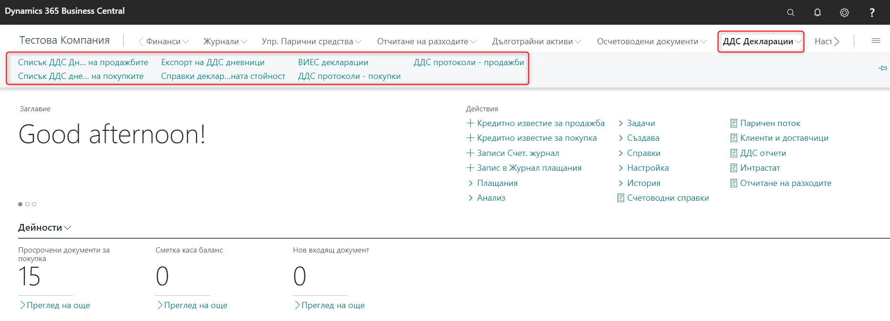
Първоначалните настройки за ДДС се намират в страница BG, ДДС и VIES Настройки.
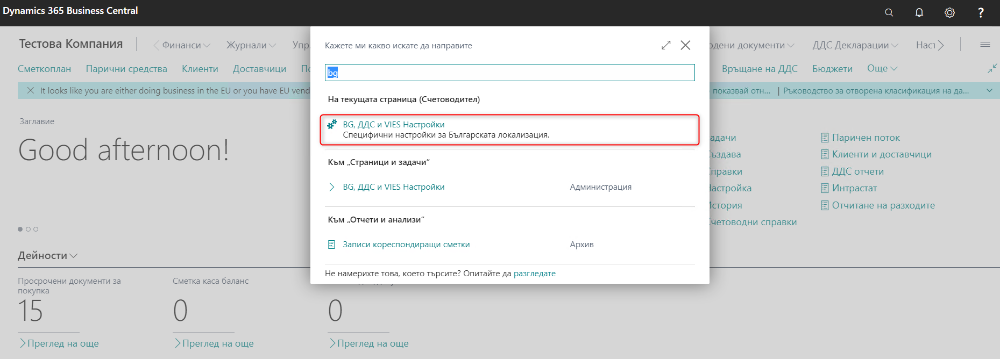
Тази страница съдържа специфични настройки относно проверките за валидност на номерата по ЗДДС и БУЛСТАТ, описания на услугите в дневниците по ДДС, попълване на определени реквизити при печат на декларации и документи.

Раздел Проверки
Раздел Настройка на експорт с ДДС
Раздел ДДС етикет
Раздел ДДС декларации
Раздел Локални настройки
Поддържането на ДДС комбинации е стандартен елемент в настройките на Dynamics 365 Business central. По-долу са изброени само тези от тях, които имат отношение към пакета Локализация за България.
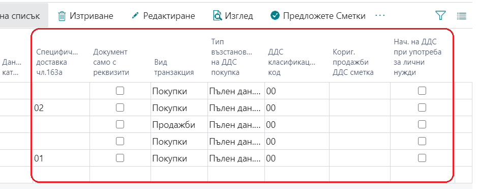
Основните полета при настройките на ДДС комбинациите в локализацията за България са:
| Код | Описание | Коментар |
|---|---|---|
| 00 | Local transactions | Покупки и продажби в страната |
| 01 | Other Cases Normal VAT | Избира се когато комбинацията е свързана с Данък лични нужди. Използва се с отметката Начисляване на ДДС при употреба за лични нужди. |
| 02 | Purchases according to art. 82, p.2-5 | Използва се при протоколите за ДДС, описани по-долу. |
| 03 | Subject to 0% VAT acc. to Ch.3 of the VAT Act | Отразява се в колона 19 (Данъчна основа на доставките със ставка 0 % по глава трета от ЗДДС) |
| 04 | Subject to 0% VAT, acc. to art. 140,146 and 173, p.1 and 4 of the VAT Act | Отразява се в колона 21 (Данъчна основа на доставките със ставка 0 % по чл. 140, чл. 146, ал. 1 и чл. 173 ЗДДС) |
| 05 | Sales subject to 0% VAT, acc. to art.21, p.3 and art. 22-24 of the VAT Act | Отразява се в колона 22 (Данъчна основа на доставки на услуги по чл. 21, ал. 2 ЗДДС, с място на изпълнение на територията на друга държава членка) |
| 06 | Transactions acc. to art. 69, p.2 of the VAT Act | Използва се при тип Продажба и тип Общо. Код 06 в дневника за продажби влиза в колона 23 (Данъчна основа на доставки по чл. 69, ал. 2 ЗДДС, вкл. Данъчна основа на доставките при условията на дистанционни продажби, с място на изпълнение на територията на друга държава членка). В дневника за покупки, когато е протокол и е с право на пълен данъчен кредит, влиза в колони 10 (ДО на получените доставки, ВОП, получените доставки почл.82, ал.2-5 от ЗДДС, вноса, както и данъчната основа на получените доставки, използвани за извършване на доставки по чл.69, ал. 2 от ЗДДС с право на пълен данъчен кредит) и 11 (ДДС с право на пълен данъчен кредит). В дневника за покупки, когато е с право на частичен данъчен кредит – в колони 12 (ДО на получените доставки, ВОП, получените доставки почл. 82, ал.2-5 от ЗДДС, вноса, както и ДО на получените доставки, използвани за извършване на доставки по чл. 69, ал.2 ЗДДС с право на частичен данъчен креди) и 13 (ДДС с право на частичен данъчен кредит). |
| 07 | Subject to 7% VAT charge | Свързано е с облагаемите доставки със ставка 7 или 9 %. Отразява се в колона 17 от дневника за продажби. |
| 08 | Intra-community purchases | Използва се при протоколите за ДДС описани по-долу |
| 09 | Distant sales effected within the territory of another EU member country | Код 09 в дневника за продажби влиза в колона 23 (Данъчна основа на доставки по чл. 69, ал. 2 ЗДДС, вкл. Данъчна основа на доставките при условията на дистанционни продажби, с място на изпълнение на територията на друга държава членка) |
| 10 | Sales and Intra-community acquisitions exempt from VAT | Отразява се в колона 24 от Дневника за продажби (ДО на освободени доставки и освободените ВОП). |
| 11 | Import | Само в дневник покупки. Когато е в комбинация Без право на данъчен кредит в покупките влиза в колона 9 (ДО и данък нa получените доставки, ВОП, получените доставки по чл. 82, ал.2-5 от ЗДДС и вноса безправо на данъчен кредит или без данък). В дневника за покупки, когато е протокол и е с право на пълен данъчен кредит, влиза в колони 10 (ДО на получените доставки, ВОП, получените доставки почл.82, ал.2-5 от ЗДДС, вноса, както и данъчната основа на получените доставки, използвани за извършване на доставки по чл.69, ал. 2 от ЗДДС с право на пълен данъчен кредит) и 11 (ДДС с право на пълен данъчен кредит). В дневника за покупки, когато е с право на частичен данъчен кредит в колона 12 (ДО на получените доставки, ВОП, получените доставки почл. 82, ал.2-5 от ЗДДС, вноса, както и ДО на получените доставки, използвани за извършване на доставки по чл. 69, ал.2 ЗДДС с право на частичен данъчен креди) и колона 13 (ДДС с право на частичен данъчен кредит). |
| 12 | Intermediary in triangular operations | Свързано с доставки, като посредник в тристранни операции |
| 13 | Intra-community sales | Свързано с дневник продажби и колона 20 (ДО на доставките със ставка 0 % на ВОД) |
| 50 | ДДС протокол за компенсация гориво | във форма Настройка осчетоводяване ДДС, при режим Редактиране на ДДС комбинацията за Компенсацията за ДДС протокола, в Раздел Общи има поле Протокол за компенсация, в което трябва да се постави отметка. На база тази отметка, когато се генерира ДДС дневник, ДДС протокол с такава комбинация ще влиза с код 50. |
| 83 | Продажби компенсация гориво | във форма БГ, ДДС и VIES настройки в раздел ДДС етикет е добавено поле "Код клиент компенсация". В това поле трябва да посочите клиента за който ще се издават фактурите с горивото, което ще се компенсира. Продажбите на този клиент в ДДС дневника ще влизат с код 83, те няма да се обединяват, а ще влизат документ по документ, защото използват номерацията на фактурите. |
| 84 | Доставка на хляб | В ДДС класификационния код се попълва 00 за ДДС комбинацията, като в колона "Специфични доставки чл.163а" се попълва код 07. В този случай в ДДС дневника вида на документа ще се смени на 84 |
| 85 | Доставка на брашно | В ДДС класификационния код се попълва 00 за ДДС комбинацията, като в колона "Специфични доставки чл.163а" се попълва код 08. В този случай в ДДС дневника вида на документа ще се смени на 85 |
| 90 | Само ДДС в дневник продажби | При осчетоводяване на ДДС протокол за продажби със съответните ДДС групи - този протокол влиза само в дневник продажби с код 09 и се записва само сумата на ДДС-то в колона 12 (Начислен ДДС за доставки по к. 11 и начислен данък (20%),предвиден в закона в други случаи), без основа. |
| 92 | Purchases according to art. 82, p.2-5- в дневник покупки влизат без право на данъчен кредит със сума на ДДС | Използва се при протоколите за ДДС описани по-долу |
| 98 | Intra-community purchases - в дневник покупки влизат без право на данъчен кредит със сума на ДДС | Използва се при протоколите за ДДС описани по-долу |
По подобие на покупките и на продажбите, ДДС протоколите могат да се създадат преди да се осчетоводят. Неосчетоводените протоколи се намират в списъците ДДС протоколи - покупка и ДДС протоколи - продажба, а осчетоводените протоколи - в Осчет. ДДС протоколи – покупка и Осчет. ДДС протоколи - продажба.
Списъците са изведени в основното меню на роля Счетоводител:
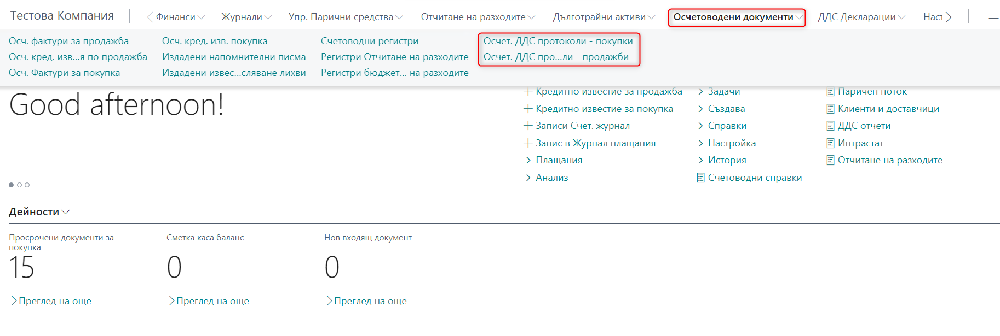

Настройката за числените серии за неосчетоводени протоколи и за осчетоводени протоколи се намира в Настройка за счетоводство.
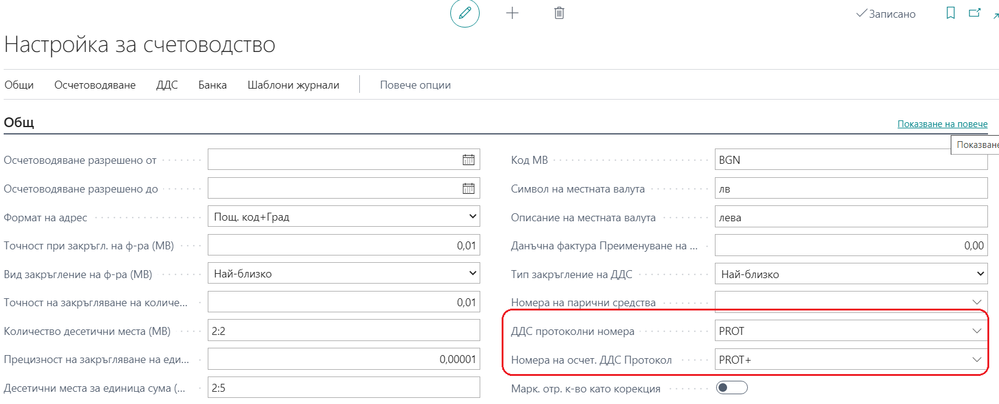
В прозореца Настройка на покупки и задължения е необходимо да се посочи ДДС бизнес счетоводната група за ДДС протоколи**.**
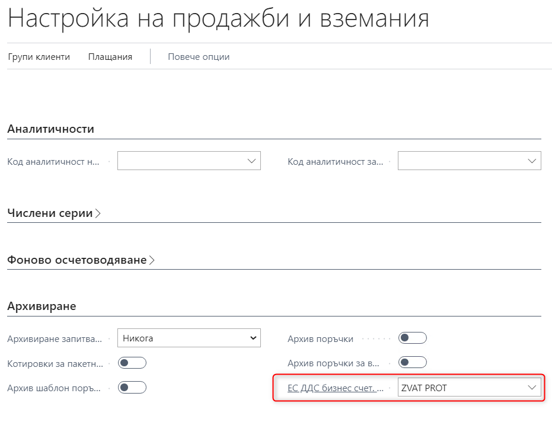
Подобно поле има и в прозореца Настройка на продажби и вземания:

За да се създаде нов ДДС протокол за покупки е необходимо той да се избере от менюто:
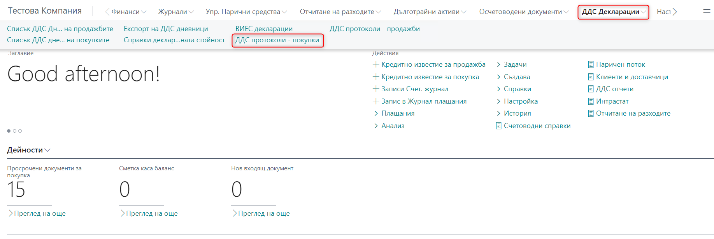
Отваря се списък, от който избираме бутон Създаване.
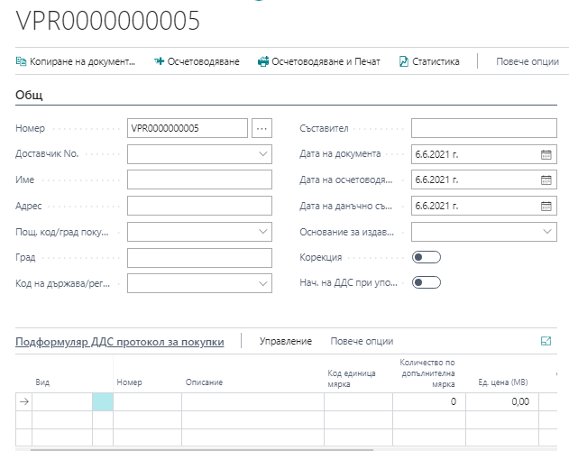
В картата, която се отваря, избираме полето Доставчик No., за да може системата да зареди вътрешен номер на протокол.
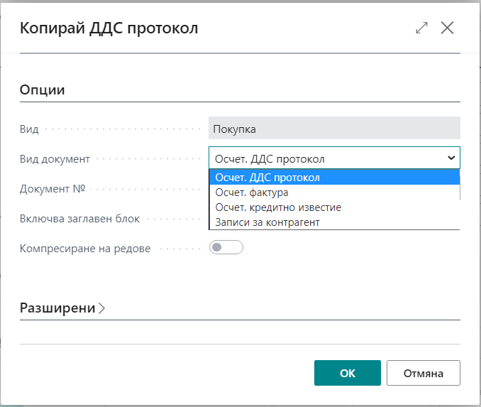
След това избираме бутон Копиране на документ, който отваря прозорец, където посочваме мястото, от което ще се копират данните му. Възможните опции се посочени по-долу:

Опция Включва заглавен блок - използва се за да се заредят данните от заглавния блок на осчетоводения документ. При опция Записи за контрагент заглавният блок трябва да се попълни ръчно.
Опция Компресиране на редове – избирането ѝ означава, че редовете на копирания осчетоводен документ се обобщават в един ред в създавания протокол. В другия случай, когато опцията не е избрана, редовете от осчетоводения документ се копират в протокола така, както са въведени в документа.
След като са попълнени съответните опции се избира бутона ОК и данните се зареждат в новосъздавания протокол.
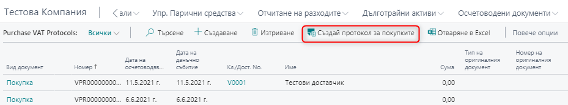
Необходимо е да се въведе Съставител и Основание за издаване.
Може да попълните и поле ДДС описание, с което съдържанието му ще се появи в ДДС дневниците като основание.
ДДС протоколи могат да се създадат едновременно за повече от един документ. В този случай от списъка на ДДС протоколите за покупка се избира бутон Създай протокол за покупки.

При избора на тази опция се отваря прозорец, в който трябва да се въведе следната информация:
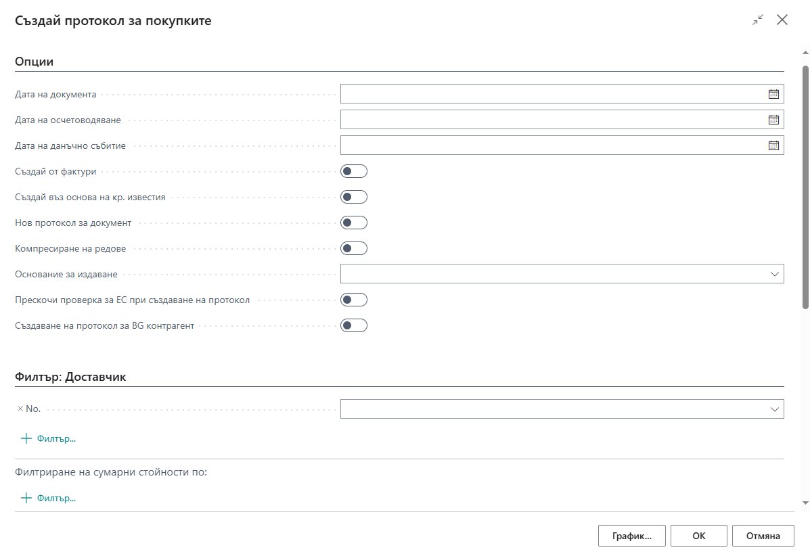
Филтрите по Доставчик, Фактура и Кредитно известие помагат за допълнително филтриране на документите. Така например може да посочите във Филтър: Доставчик - ДДС бизнес счет.група със стойността, която е за доставчиците от ЕС (VEND EU). Така ще филтрирате само тези документи, които са от доставчици от ЕС.
Създадените протоколи с действие Създай протокол за покупки се намират в страница ДДС протоколи – покупки. Системата предлага възможност за групово осчетоводяване на създадените ДДС протоколи, което се извършва чрез бутона Осчетоводяване на папка.
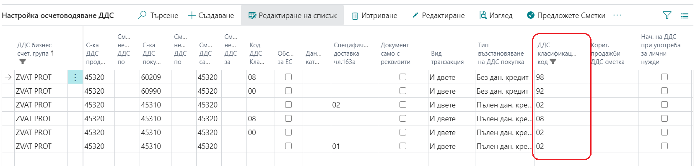
Функционалността за групово осчетоводяване не изисква допълнителни настройки, за да бъдат осчетоводени всички протоколи към фактурите с датата на фактурата.

След като протоколите бъдат осчетоводени, системата автоматично поставя отметка за осчетоводен ДДС протокол в списъка с осчетоводени фактури и кредитни известия за покупки. По този начин се избягва повторното генериране на протоколи за едни и същи документи.
От ДДС комбинациите в редовете на протокола се определя в коя колона от дневника ще попадне съответния протокол.
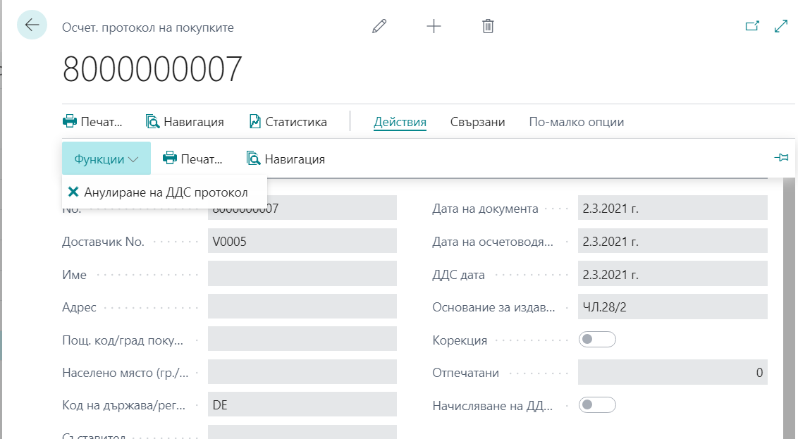
Когато ДДС комбинацията за протоколи е маркирана с ДДС класификационен код 08, в Дневника за покупки протоколът влиза в колона 10 и 11, а в дневника за продажби в 9,10,13 и 15.
Когато класификационния код е 02, в Дневника за покупки протоколът влиза в колона 10 и 11, а в дневника за продажби в 9,10,14 и 15.
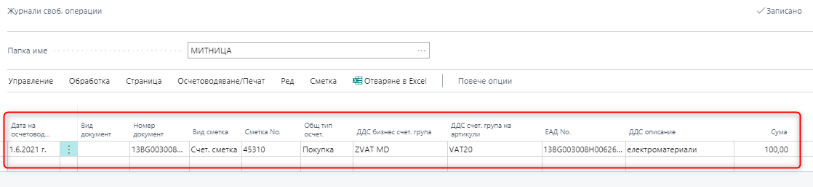
Когато протоколът трябва да влезе в ДДС дневника за покупки без право на данъчен кредит, като сумата на ДДС е включена в тази сума, е необходимо да се избере комбинация, която включва ДДС класификационни кодове 98 и 92, като за тях Тип възстановяване на ДДС покупки е Без дан.кредит. В този случай само при тези два кода в колона 9 на Дневника за покупки ще се появи сумата на основата с включен ДДС, а колоните на дневника за продажби са идентични на код 02 и 08.
ДДС протокол за покупки може да се използва и за осчетоводяване на ДДС при брак. В този случай се използва функционалността за създаване на ДДС протокол при използване на стоки и услуги за лични нужди, описана по-долу. Протоколът ще се включи само в Дневника за продажби. Необходимо е да се настрои нова ДДС комбинация, за която да има поставена отметка в поле Нач. на ДДС при употреба за лични нужди, както и самият протокол да бъде маркиран, като протокол за лични нужди.
Класификационен код 90 се използва също за тези случаи. При осчетоводяване на ДДС протокол за продажби със съответните ДДС групи - този протокол влиза само в дневник продажби с код 09 и се записва само сумата на ДДС-то в колона 12 (Начислен ДДС за доставки по к. 11 и начислен данък (20%),предвиден в закона в други случаи), без основа.
В случай, че се налага да се анулира протокол, то тогава е необходимо от списъка с осчетоводени протоколи да се отвори картата на съответния протокол и от меню Действия – Функции да се избере Анулиране на ДДС протокол.

Счетоводните операции за анулиране се съставят автоматично, а протоколът се показва в ДДС дневниците с нулеви суми. Счетоводните операции за анулиране се съставят автоматично с избраната дата на анулиране. Протоколът се показва в ДДС дневниците с нулеви суми. Ако посочената дата за анулиране е в различен месец от датата на протокола, анулиращия запис ще бъде включен в съответния ДДС дневник с отрицателни стойности.
Протоколът за корекция се попълва по аналогичен начин, както ДДС протокола. При ръчно създаване на протокол за корекция е необходимо да се маркира полето Корекция, като сумите по редовете трябва да са с положителен знак.
При използване на действие Копиране на документ, с което се копират данни от Кредитно известие, в протокола автоматично се маркира поле Корекция.
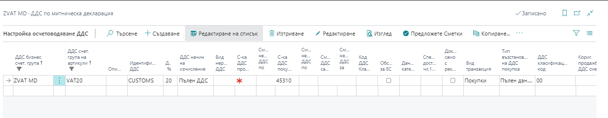
За осчетоводяване на ДДС протоколи за стоки на съхранение в страницата Настройка осчетоводяване ДДС се създава комбинация от ДДС бизнес счет.група и ДДС счет.група на артикули, за която полетата са попълнени по следния начин:
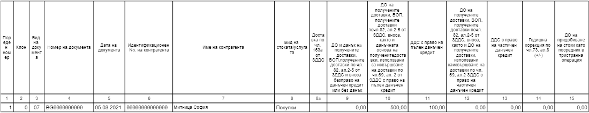
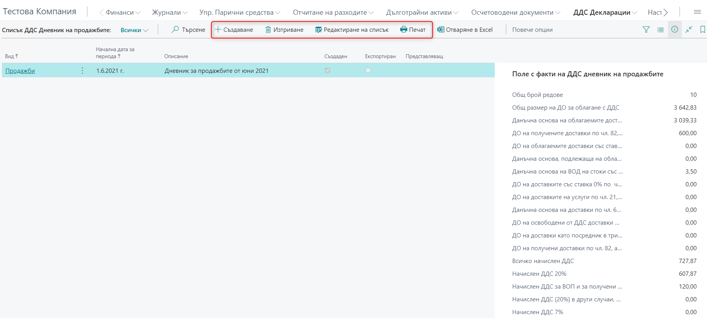
ДДС протоколът за стоки на съхранение се включва само в ДДС дневник за покупките с Вид на документа 05 и с код в колона (8а) Доставка по чл. 163а, като данъчната основа се отразява в колона (9). Колоните в ДДС дневник за покупките трябва да бъдат попълнени по следния начин:
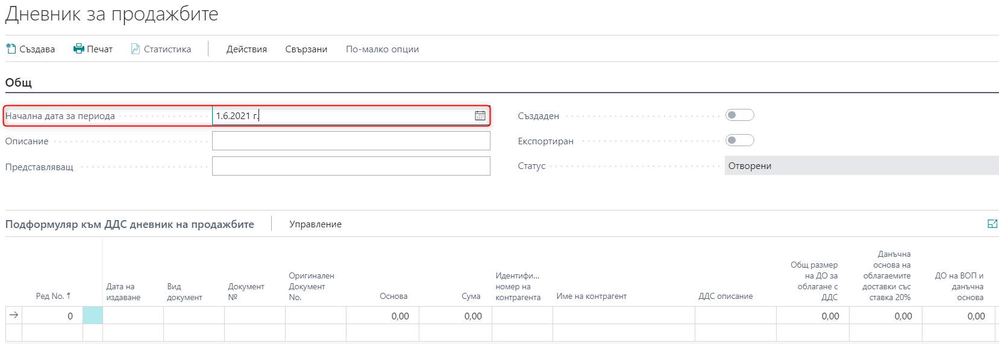
За осчетоводяване на ДДС по митнически декларации се използва Журнал Свободни операции. Препоръчваме да се създаде шаблон за тази операция със съответните кореспондиращи счетоводни сметки, за да се избегне многократното им въвеждане при осчетоводяване на всяка една от митническите декларации.
Удачно е също да се създаде доставчик Митница, за който да е посочена подходяща Счетоводна група на доставчик, така че за него да се създават записи в съответната счетоводна сметка за Разчети с митница.
В редовете на журнала трябва да се попълнят задължително следните полета:

Настройките на комбинацията от счетоводни групи, която се използва при осчетоводяване на ДДС за митническа декларация, трябва да са следните:
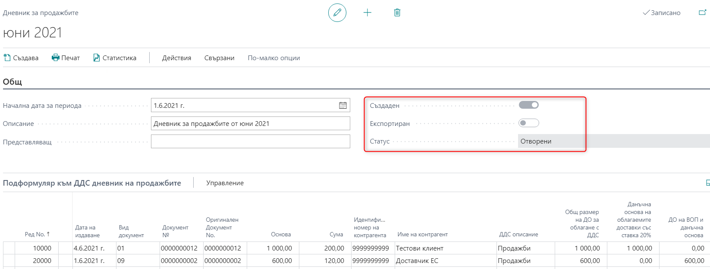
Запис в журнал свободни операции, при чието осчетоводяване се използва комбинация от ДДС счетоводни групи, настроена по посочения начин, ще се покаже в ДДС дневника като документ с Вид 07.

Съгласно българското законодателство е необходимо да се подават следните декларации:
Дневниците за ДДС имат набор от задължителни данни, които трябва да бъдат предоставени за всяка транзакция - номер на документ, тип документ, дата на документ, име на клиент / доставчик и номер на ДДС (Булстат), описание на транзакцията, ДДС основа и размер на ДДС.
Сумата на данъчната основа на документа за продажби / покупки и сумата на данъка са включени в различни колони на книгите по ДДС, в зависимост от спазването на данъчното законодателство.
Някои транзакции трябва да бъдат изключени от регистрите за ДДС (например Доставки от трети страни, които се включват в дневниците при осчетоводяване на митническа декларация).
Датата на осчетоводяване на документа е водеща при включването на различните видове транзакции в ДДС дневниците. Даден документ ще се покаже в съответния данъчен период, в случай че датата на осчетоводяване на документа съответства на периода на Дневниците по ДДС.
Създаването на нов дневник се извършва след достъпване на списъка със съответните дневници – за покупки или за продажби. За потребител с роля Счетоводител, те са видни в основното меню:
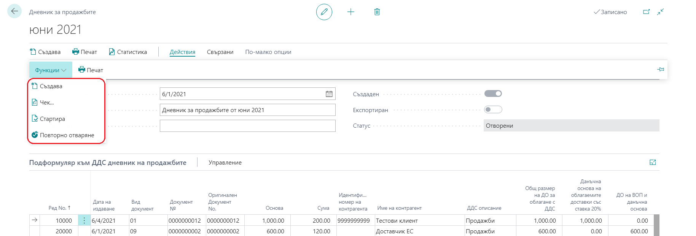
От прозореца на списъка с дневниците за покупки или на списъка с дневниците за продажби може да се създаде нов дневник, а също и да се разгледа, редактира, изтрие или разпечата съществуващ дневник.
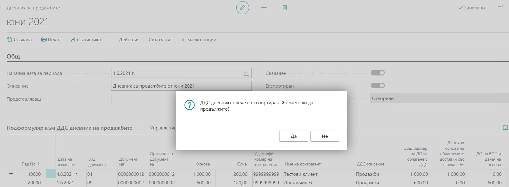
Създаването на нов дневник се извършва с избор на действието Създаване. Отваря се прозорец, в който е необходимо да се въведе първия ден от съответния месец, за който се изготвя дневника - в полето Начална дата на периода.

След това е необходимо да се избере Създава. При изпълнение на това действие, данните се зареждат в редовете на документа като на снимката по-долу.
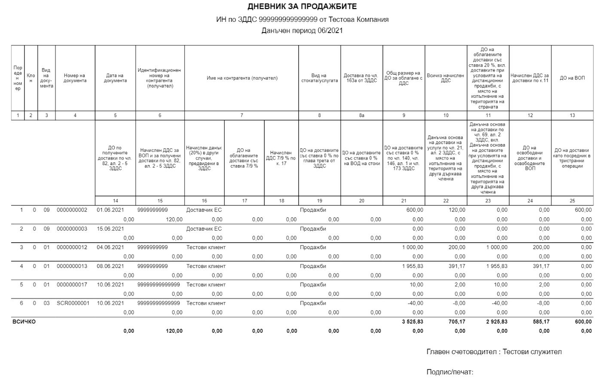
Записите, включени в дневника са тези, които са осчетоводени в системата към момента на създаване на дневника и датата им на осчетоводяване е в рамките на периода, за който се създава дневника. В случай, че след генериране на дневник се осчетоводят още документи за периода на дневника, е необходимо той да се генерира отново с бутон Създава.
Полетата в ДДС дневника, предоставящи информация за състоянието на дневника са следните:
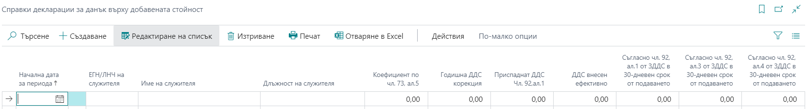
За всеки един ДДС дневник могат да бъдат изпълнени определени действия, като мястото за тяхното активиране е в Дневника за продажбите или за покупките, меню Действия – Функции.

Действията са следните:
В случай, че действието Създаване се изпълнява за дневник, който е със статус Отворен, но е маркиран като Експортиран, то тогава системата извежда предупреждаващо съобщение за това, че дневникът вече е бил експортиран.
При потвърждение с Да, редовете на дневника се прегенерират, а дневникът се маркира като неекспортиран.
След като един дневник се експортира във файл с формат за подаване към данъчната администрация (описано в т. 2.4.4. Създаване на ДДС файлове), дневникът автоматично се маркира като Експортиран. Освен това в списъка с дневниците и в самия дневник и статусът му се променя на Стартиран, в случай, че не е променен преди това с действие Стартира.
При необходимост от корекции във вече експортиран дневник, той трябва да бъде отворен с действие Повторно отваряне, след което да се създаде отново или да се коригира. След като бъдат направени корекциите, за дневника следва да се създадат нови ДДС файлове.
При избор на даден дневник в дясната част на екрана се показва Статистика свързана с него, от където може да се получи сумарна информация за записите, включени в съответния дневник.
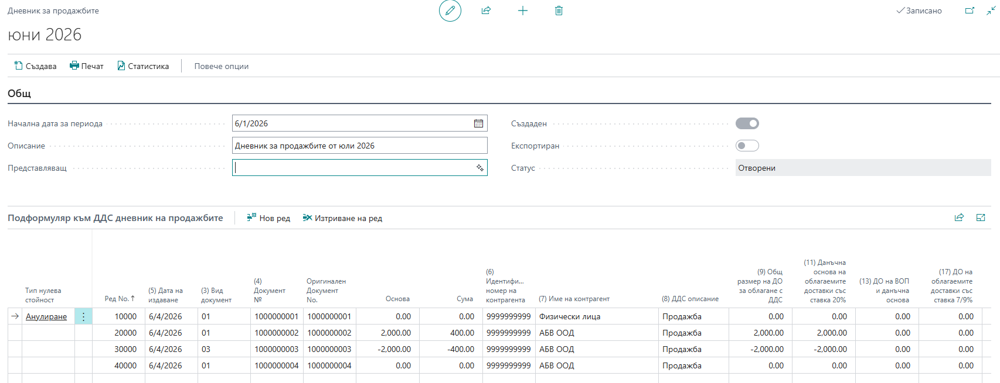
С помощта на действие Печат дневникът може да се визуализира на екран, да се разпечата на принтер или да се запази като файл:

Създаването на Справка декларация за данък върху добавената стойност се извършва в страница Справки декларации за данък върху добавената стойност. За роля Счетоводител тя се намира в основното меню, в раздел ДДС Декларации.

Нова декларация се създава чрез бутон Създаване. В появилия се нов ред в списъка с декларации, трябва да се въведе Начална дата на периода - първия ден от декларирания месец. Всички полета за суми в редовете на декларацията се попълват ръчно (не са изчисляеми), включително и сумите на ДДС за възстановяване и за приспадане.

Декларацията се генерира след като са генерирани дневниците за покупки и за продажби. За визуализиране на самата Декларация е необходимо да се избере бутон Печат. Данните за лицето, отговорно за изготвяне и подаване на декларацията се въвеждат еднократно и след отпечатване на документа на принтер или запазване във файл те се запазват и не е необходимо да се въвеждат при следващ печат. Необходимо е да се маркира, че това лице е Представляващо дружеството, както и да се посочи Потвърждение за коректност на данните. След като са попълнени тези данни се избира Преглед или Печат. Справката се визуализира и от нея може да се види сумата на ДДС за внасяне или за приспадане. След това тази сума трябва да се въведе по редовете на декларацията (поле ДДС внесен ефективно).
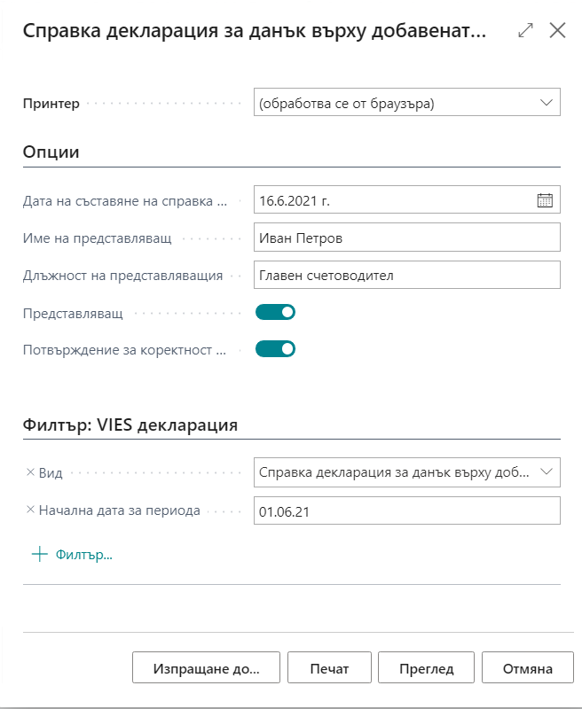


Създаването на VIES декларация се извършва в страница ВИЕС декларации. За роля Счетоводител тя се намира в основното меню, в раздел ДДС Декларации.

Нова декларация се създава чрез бутон Създаване.
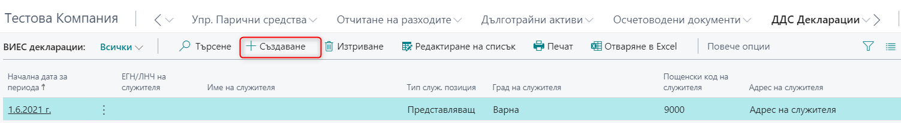
Появява се нов ред в списъка с декларации, в който трябва да се въведе Начална дата на периода - първия ден от декларирания месец, както и данни за служителя, отговорен за изготвяне и подаване на декларацията – ЕГН, Име, Тип позиция (представляващ, пълномощник), Адрес.

Чрез бутон Печат се отваря прозорец, в който се подготвя отпечатването на декларацията.
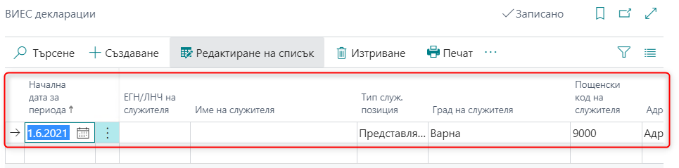

Създаването на файлове за ДДС се извършва в страница Експорт на ДДС дневници. За роля Счетоводител тя се намира в основното меню, в раздел ДДС Декларации.
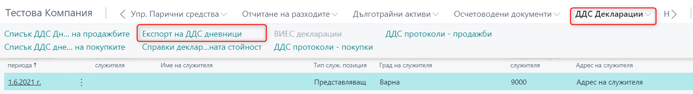
Отваря се прозорец, в който се посочват:
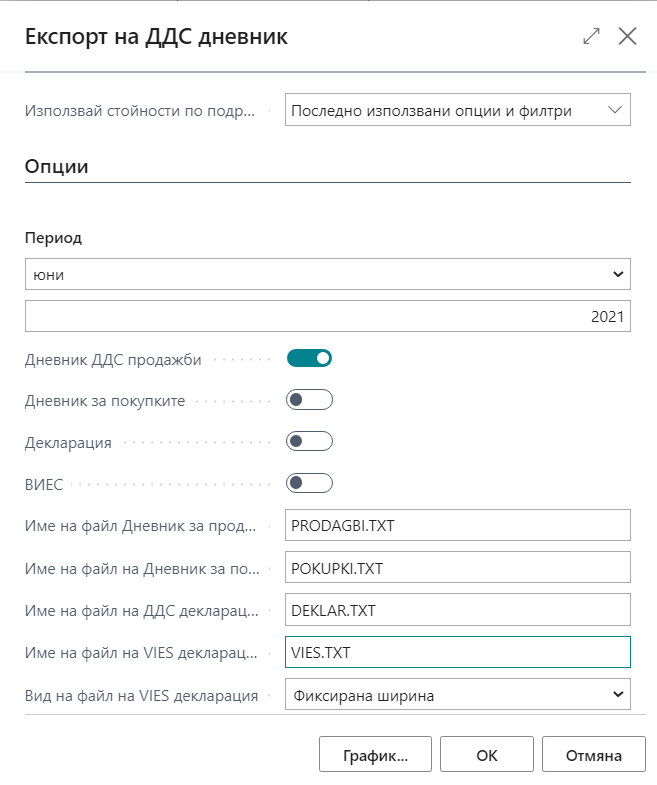
Полетата за имената на файловете се попълват автоматично със стойности, според изискванията за подаването им в данъчната администрация:
С бутон ОК се създава един архивен файл, който съдържа всички маркирани дневници и декларации.
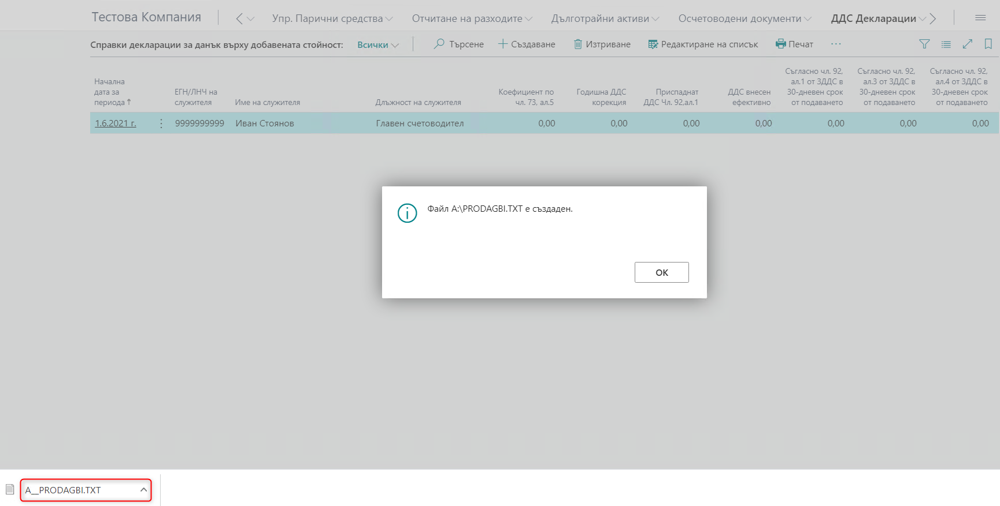
След като се генерират експортни файлове за дневниците, системата автоматично маркира тези дневници като Експортирани.
Файловете за ДДС дневниците и за декларациите могат да се генерират многократно при необходимост от корекция на данните или на други обстоятелства.
Промените са във връзка с приложението на чл. 6, ал. 3, т. 1 и чл. 9, ал. 3, т. 1 от ЗДДС и необходимостта регистрираните по ДДС компании да декларират данъка за ползваните за лични нужди служебни активи с подаване на месечната справка декларация и дневниците за покупки и продажби пред НАП.
С оглед събиране на данни и контрол от страна на органите по приходите е направено изменение в справка-декларацията и дневника за продажбите, при което в отделна клетка, съответно колона, регистрираните по ЗДДС лица декларират начисления от тях данък във връзка с извършени безвъзмездни доставки на стоки и услуги за лични нужди, приравнени съгласно закона на възмездни. В допълнение, поради често допускани грешки от данъчно задължените лица, в долния край на справка-декларацията със звездички са допълнени пояснения относно доставките, които се декларират в клетките на справка-декларацията, в които по технически причини не може да се включи тяхното изчерпателно изброяване, както и относно начисления данък за доставките на стоки или услуги за лични нужди. По този начин информацията, която се декларира в посочените клетки от справка-декларацията, се пояснява и събирането на необходимите за последващ контрол данни се улеснява.
Данъчно задължените лица, регистрирани по ЗДДС, които използват стока, включена в стопанските им активи, и за лични нужди, могат да ползват следните алтернативни правни възможности:
1) да не приспадат данъчен кредит за стоката и за съпътстващите ползването й разходи и да не начисляват данък за доставката за лични нужди, или
2) да упражнят правото на данъчен кредит за стоката и за съпътстващите ползването й разходи в пропорция, съответстваща на пропорцията на използването на стоката за стопанската дейност и за лични нужди и да не начисляват данък за доставката за лични нужди, или
3) да приспадат данъчен кредит за стоката и/или за съпътстващите ползването й разходи и да начисляват данък за доставката за лични нужди.
В случай, че лицето е избрало да прилага първата възможност, същото следва да отрази получените данъчни документи за придобиването на стоката и съпътстващите ползването й разходи в дневника за покупки като посочи в колона 9 "Данъчна основа и данък на получените доставки, ВОП, получените доставки по чл. 82, ал. 2 - 5 ЗДДС и вноса без право на данъчен кредит или без данък" общата сума на данъчната основа и ДДС за всяка доставка поотделно, съответно в клетка 30 от справка-декларацията за ДДС.
В случай, че лицето е избрало да прилага втората възможност, същото следва да отрази получените данъчни документи за придобиването на стоката и съпътстващите ползването й разходи в дневника за покупки като посочи:
- в колона 10 "Данъчна основа на получените доставки, ВОП, получените доставки по чл. 82, ал. 2 - 5 ЗДДС, вносът, както и данъчна основа на получените доставки, използвани за извършване на доставки по чл. 69, ал. 2 ЗДДС с право на пълен данъчен кредит" стойността на данъчната основа и в колона 11 "ДДС с право на пълен данъчен кредит" размерът на данъка върху добавената стойност за всяка доставка поотделно в пропорция, съответстваща на използването на актива за стопанската дейност, съответно в клетка 31 и в клетка 41 от справка-декларацията за ДДС и
- в колона 9 "Данъчна основа и данък на получените доставки, ВОП, получените доставки по чл. 82, ал. 2 - 5 ЗДДС и вноса без право на данъчен кредит или без данък" общата сума на данъчната основа и ДДС за всяка доставка поотделно, съответстваща на пропорцията на използването на актива за лични нужди, съответно в клетка 30 от справка-декларацията за ДДС.
В случай, че лицето е избрало да прилага третата възможност, същото следва да отрази:
- в дневника за покупки - получените данъчни документи за придобиването на стоката и съпътстващите ползването й разходи като посочи в колона 10 "Данъчна основа на получените доставки, ВОП, получените доставки по чл. 82, ал. 2 - 5 ЗДДС, вносът, както и данъчна основа на получените доставки, използвани за извършване на доставки по чл. 69, ал. 2 ЗДДС с право на пълен данъчен кредит" стойността на данъчната основа и в колона 11 "ДДС с право на пълен данъчен кредит" размера на данъка върху добавената стойност за всяка доставка поотделно, съответно в клетка 31 и в клетка 41 от справка-декларацията за ДДС;
- в дневника за продажби:
а) за данъчни периоди до месец януари 2016 г., включително - протоколът, с който е начислило данък за доставката за лични нужди като посочи в колона 16 "Начислен данък (20 %), предвиден в закона в други случаи" размера на начисления данък, съответно в клетка 23 "Начислен данък (20 %), предвиден в закона в други случаи" на справка-декларацията за ДДС;
б) за данъчни периоди месец февруари 2016 г. и следващите - протоколът, с който е начислило данък за доставката за лични нужди като посочи в колона 16 "Начислен данък за доставки на стоки или услуги за лични нужди" се посочва размера на начисления данък, съответно в клетка 23 "Начислен данък за доставки на стоки или услуги за лични нужди" на справка-декларацията за ДДС.
Когато данъчно задължено лице до началото на 2016 г. е упражнило данъчен кредит както за стока, която до този момент е ползвало за стопанска дейност и за лични нужди, така и за извършените преки разходи, свързани с използването й, и не е начислявало данък върху добавената стойност за доставката за лични нужди, може, съобразно посочените по-горе възможности, и след 01 януари 2016 г.:
- да направи корекция на упражненото право на данъчен кредит за стока и разходите, свързани с използването й, като приложи съответната пропорция на ползването за стопанската дейност и за личните нужди. Протоколът се включва в дневника за покупките като се посочва в колона 10 "Данъчна основа на получените доставки, ВОП, получените доставки по чл. 82, ал. 2 - 5 ЗДДС, вносът, както и данъчна основа на получените доставки, използвани за извършване на доставки по чл. 69, ал. 2 ЗДДС с право на пълен данъчен кредит" стойността на данъчната основа и в колона 11 "ДДС с право на пълен данъчен кредит" размера на данъка върху добавената стойност за частта съответстваща на ползването за лични нужди с отрицателен знак, съответно в клетка 31 и в клетка 41 от справка-декларацията за ДДС, или
- да начисли данък пропорционално на размера на ползването. Протоколът, с който е начислен данъка за доставката за лични нужди се отразява в дневника за продажби по посочения по-горе начин относно третата възможност.
Декларирането на начисления данък за доставки за лични нужди и корекцията на данъчен кредит при използването и отделянето на стоки за лични нужди се извършва само със справка-декларация за ДДС като лицата нямат задължение за подаване на други декларации и справки във връзка с това пред НАП.
Документиране на начисляването на данъка при използването на стоки и услуги за лични нужди.
Данъкът за безвъзмездна, приравнена на възмездна, доставка на услуга по чл. 9, ал. 3, т. 1 от ЗДДС се начислява, като се издава протокол не по-късно от 15 дни от датата, на която данъкът е станал изискуем – чл. 117, ал. 1, т. 3 от ЗДДС.
Протоколът следва да съдържа следните реквизити:
В чл. 80 от ППЗДДС се поставят допълнителни изисквания по отношение на протоколите, като трайно вписани реквизити, номерация и анулиране и съхранение.
Протоколът се включва в дневник продажби с код на документ (09), като размерът на начисления данък се отразява в колона 16 – Начислен данък за доставки на стоки или услуги за лични нужди.
Размерът на данъка следва да се включи при определяне на резултата за съответния данъчен период в справка-декларацията по чл. 125 за този данъчен период в клетка 23 – Начислен данък за доставки на стоки или услуги за лични нужди.
В случаите, когато е избрана тази правна възможност за деклариране на ДДС при ползване на служебни активи за лични нужди, в Dynamics 365 Business Central е необходимо да се следват стъпките описани по-долу.
В меню Настройка осчетоводяване ДДС се извършват следните настройки:

Създава се комбинация от ДДС бизнес счет.група (протоколи) и ДДС счет.група на артикул (примерно: ДДС за лични нужди). Полетата се попълват по следния начин:

Важно: При осчетоводяване на документи (ДДС протокол) с тази комбинация, сумата на ДДС ще се отрази в колона 16 – Начислен данък за доставки на стоки или услуги за лични нужди на Дневника за продажби и в клетка 23 – Начислен данък за доставки на стоки или услуги за лични нужди на Справка-декларация за ДДС.
В картата на сметката, посочена като "Сметка ДДС покупки" не трябва да има посочени никакви счетоводни групи.
За начисляване на ДДС за лични нужди се използва документ ДДС протокол за покупки в програмата. В заглавния блок на документа е добавено поле Нач. на ДДС при употреба за лични нужди.
Поставянето на отметка в това поле маркира документа ДДС протокол за покупки като такъв, в който се начислява ДДС за лични нужди и се включва само в Дневник за продажби.
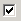
В редовете на ДДС протокол за покупки е необходимо да бъде посочена необходимата комбинация от ДДС счетоводни групи:

Важно: Системата извършва проверка за наличие на "маркирани" с отметки полета:
Единствено при наличие на отметки в тези две полета се извършва съответното осчетоводяване на записа за ДДС за лични нужди.
При наличие на отметка само в едно от полетата, системата извежда предупреждаващо съобщение за наличие на несъответствие и не позволява осчетоводяване, преди да е отстранено несъответствието:
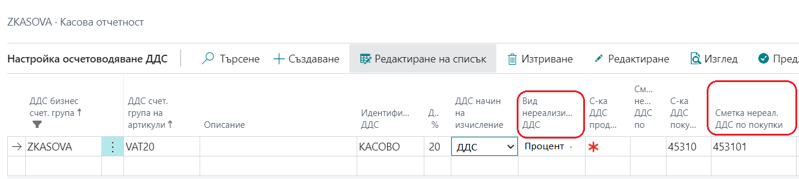
Важно: При създаване на Протокол за покупки е препоръчително да се използва функцията Копиране на документ , при което да се маркира полето Включва заглавен блок. По този начин в заглавния блок на Протокол за покупки, в полета Тип на оригиналния документ и Номер на оригиналния документ се записват типът и номерът на копирания документ. Съдържанието на тези полета не може да се редактира в последствие. Ако при Копиране на документ не се използва маркиране на поле Включва заглавен блок, то полетата в протокола остават празни и в печатната форма на протокола полето Към документ / Дата също е празно.

Въвеждането на режим "Касова отчетност на ДДС" в националното данъчно законодателство има за цел подпомагане на малките предприятия, които срещат затруднения при плащане на данък върху добавената стойност към бюджета, преди да са получили плащане по извършените от тях доставки на стоки и услуги от клиентите си.
Режимът касова отчетност се прилага в случаите, когато е налице облагаема доставка със ставка 20 % ДДС, плащането е задължително по банков път, доставчикът и получателят са лица, регистрирани по ЗДДС, които не са свързани лица.
За да се направят необходимите настройки в Dynamics 365 Business Central са нужни следните стъпки.
В страница Настройка за счетоводство е необходимо да се постави отметка в полетата: Нереализиран ДДС и Нереализиран ДДС за ав.плащане.

В страница ДДС Бизнес счетоводни групи е необходимо да се създаде нова група.
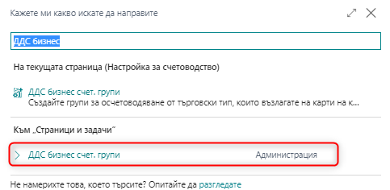
В посочения пример по-долу е създадена група ZKasova (името е по избор на потребителя). В колона Член 151 се поставя отметка в реда на групата за касови плащания.
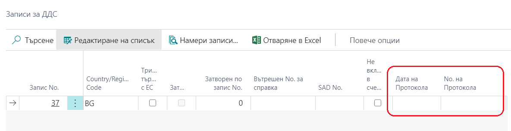
В страница Настройка осчетоводяване ДДС се създава нова комбинация, включваща ДДС Бизнес счетоводната група за касови плащания.

За новосъздадената комбинация, полетата трябва да са попълнени по следния начин:
След като е настроена ДДС комбинацията е необходимо в картата на тези доставчици, които са регистрирани по режима на Касовата отчетност да се въведе новата ДДС бизнес счетоводна група.
По този начин във всеки документ за покупка, свързан с доставчик, имащ настройки по режима за Касова отчетност, ще се зарежда автоматично тази ДДС бизнес счетоводна група и системата ще разпознава фактурата и плащанията по нея като документи по режима "Касова отчетност".
Когато се въвежда Фактура за доставка от доставчик, регистриран по този режим, ако фактурата е в брой е необходимо тя да се разглежда като обикновена фактура. За тази цел в документа за покупка, който се създава в системата, е необходимо да се промени ДДС бизнес счетоводната група като се постави групата, която се използва стандартно за български доставчици, а не тази, посочена като ДДС група за касова отчетност.
Промяната на ДДС бизнес счет. Група се извършва в заглавния блок на Поръчката за покупка или на Фактурата за покупка от раздел Детайли за фактура.
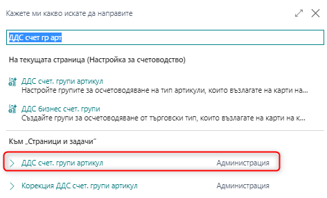
От списъка с ДДС бизнес счет. Групи се избира и поставя необходимата група. При това системата извежда предупредително съобщение, което трябва да се потвърди с избор на Да.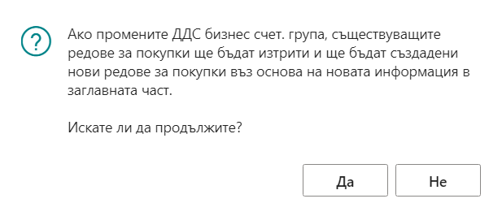
ВАЖНО: Препоръчително е да промените ДДС бизнес счетоводната група преди да въведете редовете в поръчката или във фактурата за покупка. В случай че по редовете вече е въведена счетоводна сметка, сумата ще се изтрие и е необходимо да се въведе отново. В случаите че е бил въведен артикул и за реда е направена ръчна корекция на цена или на отстъпка, групата също трябва да се въведе наново.
При осчетоводяване на документа системата издава предупредително съобщение, за да се избегне грешка при евентуална смяна на групите. В случай че плащането е в брой, отговорът на съобщението трябва да е Не (No).

В случаите на осчетоводяване на фактура по режима за касови плащания, стойността на ДДС се отразява в отделна сметка. При свързване на Фактурата с Плащането, сумата автоматично се прехвърля от тази сметка в сметката за ДДС. Датата, на която се осчетоводява тази операция е датата, на която е направено свързване на фактурата с плащането. Фактурата може да се свърже с плащането преди да е получен Протокола за това плащане. Препоръчително е свързването да се извършва от страницата със записа за плащането, а не от фактурата.
Въвеждането на протокола се извършва от Записи за доставчик (Карта на доставчик – Записи).
Избира се фактурата, за която е получен Протокол. След като се маркира фактурата е необходимо от бутон Функции да се избере опция Нанасяне на протоколи.
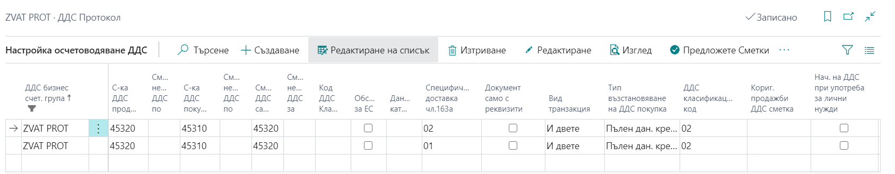
Извеждат се всички записи за плащания на съответната фактура. В полета Дата на Протокол и № на Протокол се записват датата и номера на протокола. Една фактура може да се плати с няколко протокола. В този екран ще се появят и въведените до момента протоколи към избраната фактура.

След като са въведени дата и номер на протокола, страницата трябва да се затвори. Датата на протокола трябва да е в рамките на месеца, в който е свързан записа. В противен случай системата ще изведе съобщение за грешка. Записът за Протокола се показва в ДДС дневника в месеца, в който е свързан записа (датата на осчетоводяване на ДДС). В случай на разминаване в месеците на свързване и протокол е необходимо плащането да се развърже от фактурата и отново да се върже с дата от месеца, в който е издаден протокола.
Генерирането на ДДС дневниците и Справката декларация остава по стандартния начин.
Съгласно българското законодателство са въведени специални режими за обратно начисляване на ДДС при отразяване на сделките с отпадъци и зърнени и технически култури. Обратното начисляване е специфичен данъчен инструмент, при който данъкът се начислява от получателя, а не от доставчика. Механизмът изисква данъкът да е изискуем от получателя по сделката, който трябва да е регистрирано по ЗДДС лице, независимо дали доставчикът е регистрирано по ЗДДС лице или не е.
Във връзка с тези изисквания в Dynamics 365 Business central е необходимо да се направят следните настройки.
Необходимо е да се създадат нови ДДС счетоводни групи на артикули. Това се извършва в страницата ДДС счетоводни групи на артикули. Страницата може да бъде открита чрез действие Търсене:

В примера по-долу са създадени групите VAT_GRAIN и WASTE.
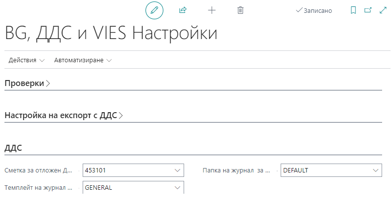
В Настройка на осчетоводяване ДДС се извършват следните настройки за новите групи за артикули:
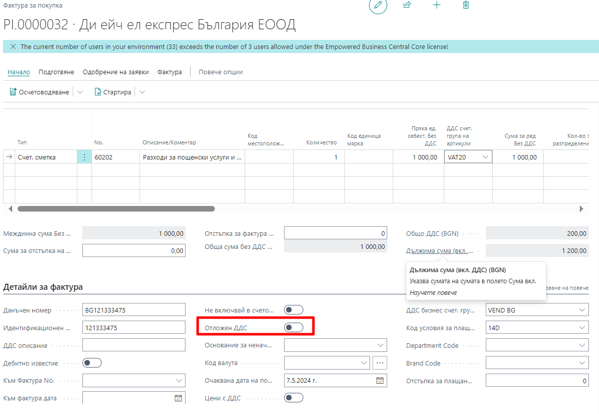
Създават се комбинации от ДДС бизнес счет.група на клиенти от България и новите ДДС счетоводни групи на артикули. Полетата в комбинациите се попълват по следния начин:
В страница Настройка на осчетоводяване ДДС е добавена ново поле Специфична доставка по чл.163а. В това поле за комбинацията от счетоводни групи, използвана при отразяване на продажба на отпадъци се посочва код 01, а при отразяване на продажба на зърнени храни - 02.
| Код | Описание |
|---|---|
| 01 | Доставка по част I на приложение 2 от ЗДДС |
| 02 | Доставка по част II на приложение 2 от ЗДДС |
Когато се продават артикули, включени в някоя от новите групи (отпадъци или зърнени и технически култури) , е необходимо в картата на артикула да се промени ДДС счет. група на артикула като се посочи съответната новосъздадена група.
В случай че по редовете на документа за продажба се посочва приходна счетоводна сметка, подходящо е да се използва такава сметка, в чиито настройки е посочена съответната ДДС счет. група на артикул. В случай че се използва една и съща сметка за продажба при облагаеми и при необлагаеми сделки, тогава е необходимо в редовете на Поръчката или на Фактурата за продажба да се промени ДДС счет. група на артикул.
Начисляването на данъка в този случай ще се извършва от получателите по доставките с издаването на протокол. Протоколът може да е общ за всички доставки, за които данъкът е станал изискуем през съответния данъчен период, когато доставчиците са физически лица, които не са данъчно задължени. Фактурите за доставки с обратно начисляване трябва да съдържат като основание "обратно начисляване чл.163а, ал.2 от ЗДДС".
Обратно начисляване няма да се прилага при вътреобщностни доставки и придобивания (доставки от и към български лица с контрагенти от държави-членки на Европейския съюз), в случаите на тристранни операции, внос и при облагаеми с нулева ставка доставки на стоки извън територията на Европейския съюз.
В страница Настройка на осчетоводяване ДДС се извършват следните настройки за новите групи:

Създават се комбинации от ДДС бизнес счет.група на доставчици от България и новите ДДС счетоводни групи на артикули. Полетата в комбинациите се попълват по следния начин:
Документите за покупка на артикул, който е настроен като отпадък или като зърнена култура, трябва да се показват в ДДС дневниците без сума.
За протоколите за самоначисление в страница Настройка на осчетоводяване ДДС е необходимо да се добавят комбинации от групи, които да включват новите ДДС счет. група на артикули.

Създават се комбинации от ДДС бизнес счет.група за ДДС протоколи и новите ДДС счетоводни групи на артикули. Полетата в комбинациите се попълват по следния начин:
Важно: Когато се осчетоводява Протокол за отпадъци или зърнени култури е необходимо да се промени ДДС счет. група на артикули по редовете на протокола. В случай че не бъде променена, протоколът ще се покаже в ДДС дневника без необходимите реквизити.
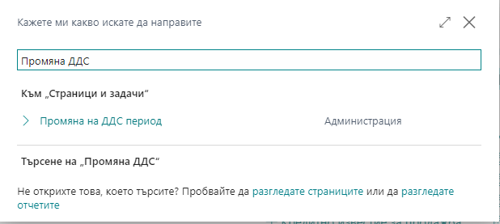
В BG, ДДС и VIES Настройки се попълва сметката за отложено ДДС, както и шаблон и папка за журнал свободни операции:

Въвежда се фактурата и в таб Детайли за фактурата се поставя отметка в полето Отложен ДДС:

Ако се маркира полето Отложен ДДС, автоматично се поставя и отметка в полето Не включвай в счетоводни книги.
Ако се премахне отметката в полето Отложен ДДС, автоматично се маха и отметката в полето Не включвай в счетоводни книги.
Когато се осчетоводи фактурата, данъчният кредит ще се отрази по счетоводната сметка полето Сметка за отложено ДДС в BG, ДДС и VIES настройки. В Записите за ДДС на документа има отметка в полето Отложен ДДС и Не включвай в счетоводните книги.
Отваря се ДДС дневник на покупките и се генерират фактурите, които трябва да влязат в Дневника за избрания месец. След генерирането може да се стартира функцията Отложи ДДС:

След това действие на екран се визуализират редовете от дневника по ДДС, като за фактурите, които следва да бъдат включени в ДДС дневника на покупките в следващ период, се поставя отметка в полето Отложи ДДС:
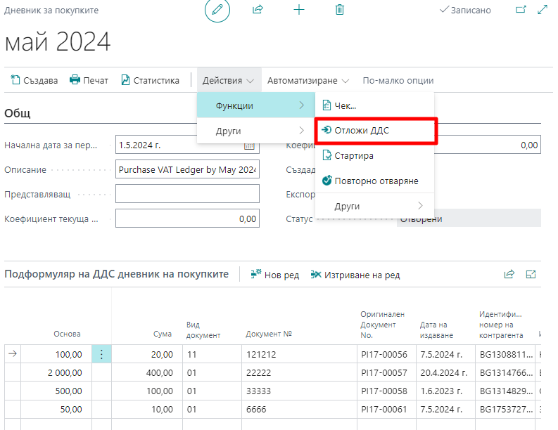
Когато се маркират фактурите за отлагане, се избира функцията Одобри на отлагане на ДДС. При това действие се случва следното:
За избраните фактури се прави автоматично счетоводен запис, чрез който сумата на ДДС-то по дадена фактура се прехвъля с операция
Дебит сметка ДДС покупки / Кредит сметка Отлагане на ДДС (със знак минус)
Премахват се от дневника на покупките избраните фактури
Поставя се автоматично отметка в полето Отложено ДДС и Не вкл.в счетоводни книги в Записи за ДДС и осчетоводената фактура за покупка.
За да се включи дадена фактура за покупка, чието ДДС е отложено с описаната по-горе функция, трябва да се стартира страницата Промяна ДДС като от бутон Търсене се избере Промяна ДДС период:

На екран се визуализира списък с документите, маркирани с Отложено ДДС, които все още не са включени в Дневниците по ДДС.

Чрез поставяне на отметка в полето Промяна на ДДС период (първата колона) се избират документите, които да се включат в избран ДДС период. Изборът се потвърждава чрез функцията Промяна на ДДС период. На екран се показва следния прозорец:
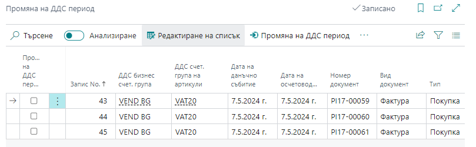
Тук следва да се посочи първият ден от месеца, в който да се включи маркираната фактура.
Системата включва фактурата в съответния месец и създава записи за прехвърлянето на сумата на ДДС от сметката Отложено ДДС към сметката за ДДС за покупките. Тези автоматично генерирани записи могат да се намерят в журнала и папката, избрани в настройката от т. 2.8.1. След преглед на предложените записи може да се осчетоводят чрез избор на бутон Осчетоводяване от съответния Журнал.
При създаване/обновяване на ДДС дневника избраната фактура ще се визуализира в съответния дневник.
Системата Интрастат се прилага за събирането на данни за вътрешно-общностни изпращания и/или пристигания на стоки, осъществени между Република България и страните-членки на Европейския съюз. Задължени лица за подаване на декларации по система Интрастат – Интрастат оператори, са лицата регистрирани по Закона за данък върху добавената стойност, които осъществяват вътрешно-общностна търговия със стоки в годишни обеми, изразени в стойност, над определени прагове за деклариране. Интрастат операторите са задължени да подават месечна Интрастат декларация.
По-долу са описани някои стандартни за системата функции, както и допълнения към пакета Локализация за България, които помагат за отчитането по Интрастат.
Необходимите данни за Интрастат декларациите са показани на снимката по-долу. Част от тези данни могат да бъдат предварително попълнени в картата на доставчик и в картата на артикул. Въведени по този начин те ще бъдат пренесени в документите, в които се избират съответните доставчик и артикул.
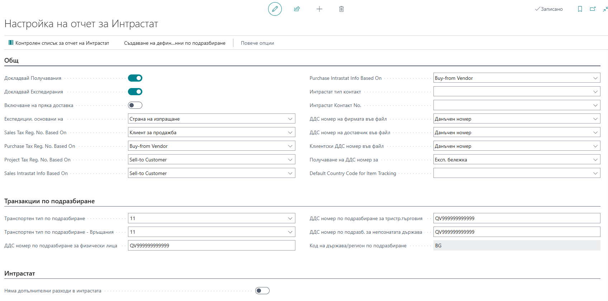
В карта на Доставчик се въвеждат данни в следните полета:

Те се пренасят в поръчката за покупка, ако са попълнени за съответния доставчик, избран в поръчката.
В карта на Артикул се попълват следните полета:
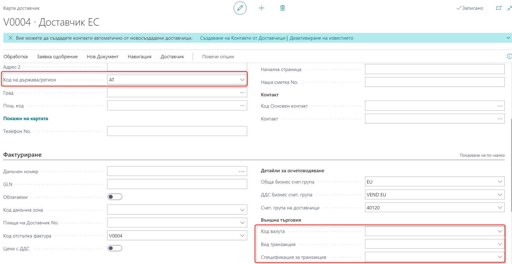
В Поръчка за покупка се попълват следните полета:
Желателно е тези полета да бъдат попълнени в поръчката за покупка преди нейното осчетоводяване. Данните се намират в раздел Външна търговия на поръчката за покупка.

В страница ДДС Справка Конфигуриране е необходимо да се поставят еднократно съответните настройки.

![kissing]() *
*
В системата има вградени проверки при осчетоводяване на документ от ЕС за попълване на задължителните полета за Интрастат в случай, че в документа е включен артикул.
В Интрастат декларацията данните за Тарифния номер и Нетното тегло се вземат от Карта на артикул, а страна произход от Складовата разписка и Експедиционната бележка.
Страна произход на артикула се зарежда в тези документи от Карта на артикул, но тя може да бъде променена в тях. В случай че не бъде въведена в документите за получаване или за експедиция, кодът на държавата няма да се попълни в редовете на създаваната декларация.
При попълването на Интрастат декларацията се използва номенклатура на страните и териториите, или т.н. Геономенклатура, съгласно Commission Implementing Regulation (EU) 2020/1197.
В Dynamics 365 Business central в страница Държави/региони срещу всяка държава се попълва съответния код за Интрастат.

Обект на Интрастат деклариране са записите за артикули, които са доставени/продадени на контрагенти с държава, маркирана с Интрастат код в таблицата с държави (независимо от това, каква е страната на произход на артикулите).
Във Финанси - Настройка – Интрастат, се намират всички специфични номенклатури, които се използват при генериране на Интрастат декларация. Те са част от стандартния пакет на Dynamics 365 Business Central и тяхното попълване и настройка не се разглежда в тази документация.
Тези номенклатури могат да се открият и чрез изписване на част от името в полето за Търсене на основното меню.
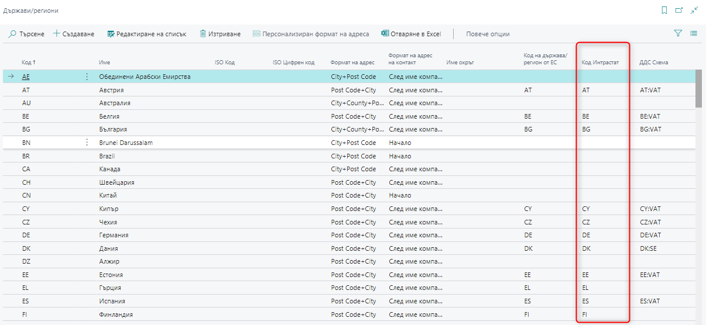
Пакетът Локализация за България позволява да се настрои допълнителния разход като част от стойността в Интрастат декларацията.
В страница Допълнителни разходи се маркират следните колони:

В страница Методи експедиция се поставя отметка на този метод, за който стойността на транспорта се включва в сумата за Интрастат.
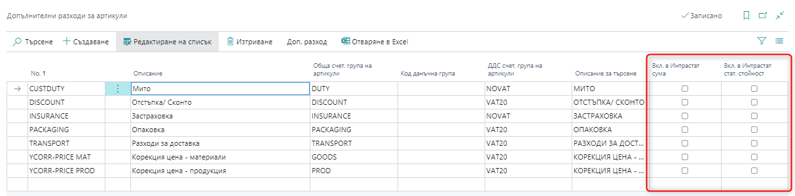
В Настройка на покупки и задължения се маркира отметка Интрастат журнал вкл. допълнителни разходи, с която се позволява добавянето на допълнителни разходи към сумата за Интрастат.

В страница BG, ДДС и VIES Настройки е създаден нов раздел Интрастат, в който е необходимо да се попълнят данните на Лицето за контакт, подаващо декларацията. Данните за Лице за контакт трябва да съвпадат с данните на лицето, от чието име се извършва подаването на декларацията в портала за електронни услуги на НАП.
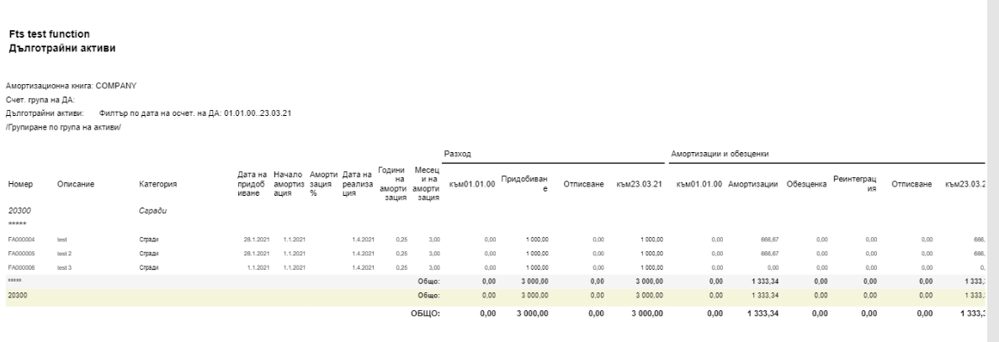
Мястото за създаване на Интрастат декларация е страница Списък с отчети Интрастат.
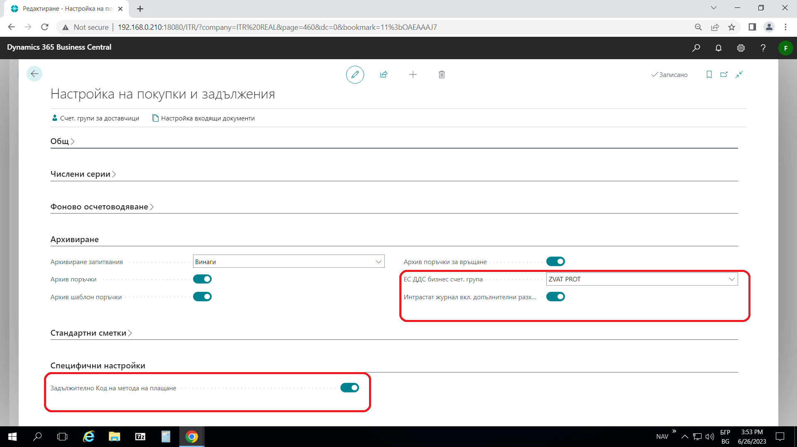
В списъка с вече създадени декларации се избира действие Създаване.
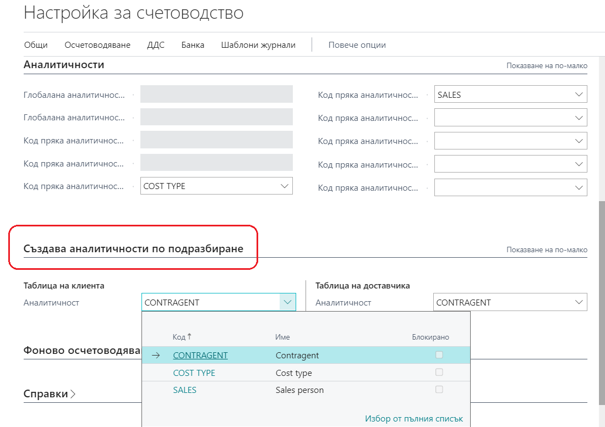
В раздел Общ на заглавната част на картата на декларацията се попълват следните полета:
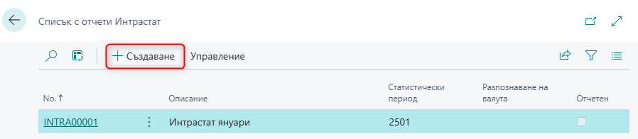
Следва да се избере действие Предложение за редове, при което в редовете на декларацията се зареждат записите за артикулите, на базата на които ще се генерира декларацията.
Това са записите, които са маркирани като "Intrastat transaction", и за които поле Код на държава/регион съдържа кодове, посочени като Intrastat Code в таблицата с държави, независимо от това, каква е страната на произход на артикула.
Необходимо е да се направи проверка за липсващи данни в редовете. Ако има такива те могат да се попълнят ръчно. Другият вариант е те да се попълнят в съответните карти (на артикули, доставчици, и т.н.), след което отново да се изпълни действието Предложение за редове. Препоръчително е за артикулите предварително да бъдат попълнени нетни тегла и тарифни номера (в картите им). Без тези полета декларацията няма да се подаде коректно.
В таблица Записи в книга артикули има добавени полета свързани с Интрастат транзакциите като - тарифен номер, митническа декларация, нетно тегло, страна на произход, страна на транспорт, метод на транспорт и т.н. По тях лесно могат да се правят допълнителни справки.
Препоръчително е да се провери и стойността на декларацията. Възможна е следната проверка: В Записи в книга артикули да се филтрира по съответния период на осчетоводяване, Вид запис (Покупка) и по Код държава/регион (<>''&<>BG). Сумата Общо себестойност (действителна), се сравнява със стойността на декларацията – Статистическа стойност.
Сумата Общо себестойност (действителна) съдържа транспортните разходи, ако такива се разпределят като допълнителен разход в поръчките за покупка.
След като данните в редовете на декларацията са проверени, се извършва експортирането им чрез бутона Създаване на файл.
Локализацията позволява както създаване на файл с готова Интрастат декларация, така и да се създадат само файлове с транзакции, които да се заредят в програмата на Интрастат и оттам да бъде направено подаването на декларацията. В този случай се използва опцията Експортиране само на транзакции.
Ако декларациите трябва да включват статистическа стойност, се маркира и опцията Със статистическа стойност.
При избор на действие Създаване на файл може да се избере кой от файловете да бъде генериран – за внос (получавания, складови разписки) или за износ (изпращания, експедиционни бележки), както и да бъдат създадени и двата едновременно.

Генерираните файлове могат да се открият в папка Downloads на компютъра.
Пакетът Локализация за България поддържа допълнителни функционалности, които надграждат основния модул Финанси в Dynamics 365 Business Central.
Автоматичното създаване на аналитичности позволява поставяне на стойност на предварително зададена аналитичност при създаване на нов клиент или на нов доставчик.
За да се използва тази функционална възможност е необходимо в страница Настройка за счетоводство, раздел Създава аналитичности по подразбиране да се посочи следното:
При създаване на нов клиент или на нов доставчик, в системата автоматично се извършва следното:
Аналитичностите по подразбиране спомагат за по-голяма съгласуваност на отчетите. Техните стойности винаги се добавят към документите и записите за конкретните клиенти, доставчици.
В Журнал свободни операции са добавени следните полета:

Справката Регистър на оборотна ведомост е допълнително разработена справка, която служи за представяне на данните по счетоводни сметки във вид, удобен за проследяване на началното салдо, оборотите за съответния период (дебит и кредит) и формираното крайно салдо.
Справката се стартира от страница Регистър на оборотна ведомост. Тя се намира и в основното меню на роля Счетоводител:
След стартиране на справката се избират следните опции:
Допълнително могат да се посочат избрани сметки в раздел Филтър: Счет.сметка.
След потвърждение чрез бутон Преглед справката се визуализира на екрана:
Като допълнение към справките в модула за дълготрайни активи, пакетът Локализация за България предлага и разработени справки за данъчен и счетоводен амортизационен план.
Справка ДА – движение за период съдържа цялата информация, необходима за ДАП и САП. Стартира се от страница ДА – движение за период. Тя се намира в основното меню на роля Счетоводител:

При стартиране на справката се попълват се следните опции:
В разделите Филтър: Счет. групи за ДА и Филтър: Дълготраен актив допълнително могат да се посочат филтри за определени дълготрайни активи или техните групи.
Забележка: Поради това, че не всички колони на справката могат да се визуализират при директното ѝ отпечатване на принтер или преглед на екран, желателно е справката да се експортира в таблица с формат Excel, в която могат да се видят всички необходими колони.

В Шаблони за разсрочване са добавени две нови полета:

Използвай транзитна сметка – ако в полето няма отметка, разсрочването работи по стандартния начин. Ако в полето има отметка, тогава за разсрочването ще се използва сметката, посочена в следващото поле.
Транзитна сметка за разсрочване – поставя се счетоводна сметка, през която минава разсрочването. Самите счетоводни операции са посочени в описанието по-долу
[ПРИМЕР при ПОКУПКИ]
При стандарното решение за разсрочване в редовете на поръчката/фактурата за покупка се поставя разходната сметка, която следва да се използва за признаването на разхода, а в шаблона за разсрочване се посочва сметката за Разходи за бъдещи периоди. Операциите са следните:
Дебит 60-та група / Кредит 401 (с датата на осчетоводяване на фактурата)
Дебит 65-та група / Кредит 60-та (с датата на осчетоводяване на фактурата)
Дебит 60-та група / Кредит 65-та група (признаването по датите в графика)
Промяната, свързана с текущата разработка, е следната:
Дебит 49900 / Кредит 401 100лв (с датата на осчетоводяване на фактурата)
Дебит 65-та група / Кредит 49900 100лв (с датата на осчетоводяване на фактурата)
Дебит 60-та група / Кредит 65-та група (признаването по датите в графика)
За отразяването на фактурата се гледа Транзитната сметка от Шаблона за разсрочване, но реалното признаване на разхода е като се гледа счетоводната сметка в реда на разхода и сметката за разсрочване от Шаблона.
[ПРИМЕР при ПРОДАЖБИ]
При стандарното решение за разсрочване в редовете на поръчката/фактурата за продажба се поставя приходната сметка, която следва да се използва за признаването на прихода, а в шаблона за разсрочване се посочва сметката за Приходи за бъдещи периоди. Операциите са следните:
Дебит 411 / Кредит 703 100 лв (с датата на осчетоводяване на фактурата)
Дебит 703 / Кредит 803 100 лв (с датата на осчетоводяване на фактурата)
Дебит 803 / Кредит 703 ..... (признаването по датите в графика)
Промяната, свързана с текущата разработка, е следната:
Дебит 411 / Кредит 498 100 лв (с датата на осчетоводяване на фактурата)
Дебит 498 / Кредит 803 100 лв (с датата на осчетоводяване на фактурата)
Дебит 803 / Кредит 703 ..... (признването по датите в графика)
За отразяването на фактурате се гледа Транзитната сметка от Шаблона за разсрочване, но реалното признаване на прихода е като се гледа счетоводната сметка в реда на приходния документ и сметката за разсрочване от Шаблона.
Пакетът Локализация за България добавя някои допълнителни настройки в модул Покупки.
В страница Настройка на покупки и задължения има добавени полета, свързани с ДДС протоколи за покупка и Интрастат, както и настройка за задължително изискване на код метод на плащане.
В картата на доставчика са добавени полета, свързани с Интрастат транзакциите - Метод на транспорт, Спецификация на транзакцията и др. При попълването им в картата на доставчика, след избора му в документ за покупка, техните стойности се записват в документа. За повече подробности вижте раздел Инстрастат на този документ.

Полетата, които са свързани с локализацията, са поставени в страниците Поръчка за покупка и Фактура за покупка. Намират се в следните раздели:
Общ
Детайли за фактура
Външна търговия
В този раздел се попълват данни, свързани с Интрастат транзакциите в случай, че документът е за покупка от ЕС и съдържа артикули. Системата извежда предупредителни съобщения, ако не са попълнени.
Важно: В страница Информация компания - раздел Експедиране, поле Код държава за експедиране трябва да е попълнено с BG. В случай че в полето липсва код BG, при осчетоводяване на фактура за покупка от български доставчик, системата ще изисква полетата в раздел Външна търговия да бъдат попълнени.
## Кредитни известия за покупкаПолетата, които са свързани с локализацията, са поставени в страниците Кредитно известие за покупка и Поръчка за рекламация покупки.Намират се в следните раздели: Общ
Детайли за фактура
Свързване
Анулирането на осчетоводени фактури и кредитни известия за покупки позволява тези документи да се покажат в ДДС дневниците с нулеви суми. Анулирането на документ за покупка се извършва от страницата с осчетоводения документ. От меню Действия – Корекция се избира Анулиране на фактура.
Отваря се прозорец, в който трябва да се въведе Дата на анулиране. Следва да се направи потвърждаване чрез избор на Затваряне.
При това системата извежда следното съобщение:

След избор на Да, системата маркира документа като анулиран - в поле Анулиран. В ДДС дневника той ще се покаже с нулева стойност. За да се коригира задължението към доставчика със стойността на анулирания документ, е необходимо да се регистрира Кредитно известие или Фактура за покупка, които също да бъдат анулирани.
Анулиране на фактура или на кредитно известие за покупка се извършва от картата на осчетоводената фактура или на осчетоводеното кредитно, чрез действие Отменя.

При това се извежда предупреждаващо съобщение, че съответният документ ще бъде отменен и ще бъде създаден и осчетоводен коригиращ документ. При сторниране на фактура се създава и осчетоводява коригиращо кредитно известие, а при сторниране на кредитно известие - коригираща фактура.

След потвърждение на действието Отменя с бутон Да се отваря страница, в която трябва да се въведе дата на анулиране. Полето Дата е задължително за попълване.

Въведената дата на анулиране се използва като дата на осчетоводяване на коригиращия документ.
След успешно приключване на действието Отменя, анулираните документи са маркирани с Да в поле Отменен, а коригиращите документи са маркирани с Да в поле Корективно.
Особености при анулиране на документи с действие Отменя:

Създадена е възможност за промяна на данни в осчетоводена фактура за покупка и в осчетоводено кредитно известие за покупка.
Промяната се извършва от страницата с осчетоводения документ.
В страницата Осч. фактура за покупка - изберете Обновяване на документ от меню Действия – Други:

В страницата Осчетоводена фактура за покупка – Актуалиизация могат да бъдат актуализирани данните в следните полета:
Раздел Детайли за фактура
Референция на плащане – можете да актуализирате полето Референция на плащане в осчетоводената фактура
Код начин на плащане – можете да актуализирате полето Код начин на плащане за фактурата
Кредитор No. – можете да актуализирате полето Кредитор No.
Ф-ра от доставчик No. – можете да актуализирате номера на фактурата от доставчика
Дата на документ – указва датата на документа от доставчика
Не включвай в счетоводните книги за ДДС - можете да актуализирате полето дали документът ще бъде включен в ДДС дневникa за покупките.
ЕАД No. – може да се актуализира номерът на митническата декларация. Той също се използва в справка Дост./Клиенти оборотна ведомост, когато ДДС-то по същата митническа декларация е осчетоводено и има попълнен номер на митническа декларация в осчетоводената фактура. Сумата на въпросното ДДС излиза в справката по дадената фактура.
Раздел Експедиция
Обновяването се потвърждава с ОК.
В страницата Осч. кред. изв. покупка изберете Актуализирай документа от меню Действия – Други.

В страницата Осч. кредитно изв. за покупка - Актуализиране могат да бъдат актуализирани данните в следните полета:
Код начин на плащане – указва начина на плащане за кредитното
Кредитно известие от доставчик No. – указва номера на кредитното известие от доставчика
Дата на документ – указва датата на документа от доставчика
Не включвай в счетоводните книги за ДДС - указва дали документът ще бъде включен в ДДС дневникa за покупките.

Обновяването се потвърждава с ОК.
Когато доставчик анулира фактура, която е осчетоводена и отразена в подаден ДДС дневник, то анулирането трябва да се отрази в следващ данъчен период.
Необходимо е да се издаде ново кредитно известие за покупка, като в полето Кредитно известие от доставчик трябва да се въведе номера на осчетоводената фактура, която е анулирана и трябва да се отрази в следващ данъчен период, както и да се сложи отметка в полето "Кредитно изв. за анулиране на ф-ра".
По този начин кредитното известие ще се отразява в ДДС дневника с код 01.
Пакетът Локализация за България добавя следните допълнителни настройки в модул Продажби.
В страница Настройка на потребители - Карта настройки потребител има добавено поле Дата на осчет. <> Работна дата. В случай че това поле е маркирано, при осчетоводяване на документи системата няма да извършва проверка за това дали датата на осчетоводяване се различава от работната.
Поле Редактира цени и отстъпки дава възможност за ограничаване на правата на потребителя при редактиране на цените и отстъпките по редовете на документите за продажба. Полето приема стойности Забранено и Пълни права. Забранено означава, че потребителят не може да редактира цени и отстъпки. При създаване на нов потребител по подразбиране той е със забранени права за редакция. В случай, че потребителят трябва да има права да редактира цени и отстъпки, е необходимо да се избере опцията Пълни права.
В страница Настройка на продажби и вземания има добавени полета в следните раздели:
Числени серии
Протоколите за продажба се показват в ДДС дневника за продажби като документ с код 81.
Специфични настройки

В страница Информация компания са добавени следните полета:
В страницата Карта на контакт е добавено поле Идентификационен номер. При създаване на клиент или на доставчик от контакт, съдържанието на това поле се записва в съответната карта на клиент или на доставчик.
В страницата Карта на клиент са добавени полета в следните раздели:
Фактуриране

Хронология за продажби – Клиент за продажби

Добавена е функционалност за извеждане на платената авансова сума от клиент.
Когато по счетоводната сметка за аванс, посочена в Обща настройка на осчетоводяване, за дадената Обща бизнес счетоводна група се осчетоводи сума, тя се визуализира в карта на клиент, както и в раздел Хронология на продажбите в Поръчка за продажба и Фактура за продажба. Платеният аванс се вижда и в Документа за продажба.
Експедиране
Добавени са полета, свързани с Интрастат декларирането. Тяхното съдържание се прехвърля в документите за продажба при избор на клиента в съответния документ. Полетата са следните:

Полетата, които са свързани с локализацията, са поставени в страниците Поръчка за продажба и Фактура за продажба. Намират се в следните раздели:
Общ
Детайли за фактура
Банка No – попълва се автоматично с данните за банковата сметка от Информация за компания. В случай, че за конкретната продажба трябва да бъде посочена друга банкова сметка на дружеството, следва в това поле да се избере съответното парично средство от списъка с парични средства.
ДДС описание – попълва се описанието на сделката (стока или услуга), което ще се показва в Дневника за продажби в колона ДДС описание. В случай че остане празно, в ДДС дневника ще се показва стойността на поле ДДС описание на продажби от страница BG, ДДС и VIES настройки.
Дебитно известие – маркира се в случай, че документът се издава, за да увеличи стойността на вече осчетоводена фактура
Към Фактура No. – попълва се в случаите, когато документът е маркиран като дебитно известие. Посочва се номерът на фактурата, към която се издава дебитното известие, като този номер се избира от списъка с осчетоводени фактури за продажба или се попълва ръчно.
Към Фактура дата – попълва се автоматично с датата на фактурата, посочена в поле Към фактура No., когато тя е избрана от списъка с осчетоводени фактури за продажба или се попълва ръчно, ако номерът на фактурата е въведен ръчно
Не включвай в счетоводните книги за ДДС – показва дали документът ще бъде включен в ДДС дневникa за продажбите. Маркира се в случаите, когато документът се използва за вътрешни цели.
Основание за неначисляване на ДДС – избира се основанието, въз основа на което не се начислява ДДС във фактурата. Използва се при освободени или необлагаеми сделки. Има създадена проверка, за фактурите от ЕС да изисква задължително попълване на основание.
Външна търговия
В този раздел се попълват данни за Интрастат транзакциите в случай, че документът се отнася за продажба към ЕС и съдържа артикули. Системата ще изведе предупредителни съобщения ако не са попълнени. Данните могат да се въведат в Карта на Клиент и да се попълват по подразбиране във фактурата за продажба.

Важно: В Информация компания в раздел Експедиране – поле Код държава за експедиране трябва да е попълнено с код BG. Ако там липсва код BG, при осчетоводяване на фактури от България системата ще изисква полетата в раздел Външна търговия да бъдат попълнени.
Полетата, които са свързани с локализацията, са поставени в страниците Кредитно известие за продажба и в Поръчка за рекламация продажба. Намират се в следните раздели:
Общ
Дата на данъчно събитие – попълва се по подразбиране с датата на осчетоводяване, но може да се променя
Място на сделката – попълва се автоматично със стойността на поле Град от страница Информация за компания, но може да се променя
Съставител – попълва се ръчно
Към Фактура No. – посочва се номерът на фактурата, към която се издава кредитното известие. Избира се от списъка с осчетоводени фактури за продажба или се попълва ръчно.
Към Фактура дата – попълва се автоматично с датата на фактурата, в случай че номерът на фактурата е избран от списъка с осчетоводени фактури за продажба или ръчно, когато номерът на фактурата е въведен ръчно

Детайли за кредитно известие
Раздел Външна търговия
В този раздел се попълват данни за Интрастат транзакциите в случай, че документът се отнася за продажба към ЕС и съдържа артикули. Системата ще изведе предупредителни съобщения, ако не са попълнени. Данните могат да се въведат в Карта на Клиент и да се попълват по подразбиране в кредитното известие за продажба.
За отпечатване на фактура или на кредитно известие е необходимо да се направи следната настройка:
За фактури - в страница Избор справка – продажби се избира опцията Фактура, а в поле Справка ID се посочва обекта, с който се управлява отпечатването на фактура – отчет Продажби – Фактура. За кредитно известие се избира опцията Кредитно известие, а в поле Справка ID се поставя обект Кредитно известие.
Подготовката за отпечатване на фактура или на кредитно известие се активира с действие Печат – от списъка с осчетоводените фактури или кредитни известия или от страницата (картата) на фактурата или кредитното известие.
Отваря се прозорец със заявка за печат, в който може да се посочи какво да включва разпечатката:
След избор на Преглед, Печат или Изпращане до PDF/Word/Excel Документ фактурата и кредитното известие се визуализират по следния начин:


В таблица по-долу може да се намери информация за полетата в документите и техните източници в системата при отпечатване на български и на английски език:
| Поле в документа | Източник (бълг.език) | Източник (англ.език) |
|---|---|---|
| Клиент – име | Фактура – Клиент за фактуриране – поле Име | Фактура – Клиент за фактуриране – поле Име |
| Клиент - адрес | Фактура – Клиент за фактуриране – поле Адрес | Фактура – Клиент за фактуриране – поле Адрес |
| Клиент - град | Фактура – Клиент за фактуриране – поле Град (въведен на български в номенклатурата) | Фактура – Клиент за фактуриране – поле Град (ако е въведен на български, системата ще го преведе автоматично на английски) |
| Клиент - държава | Фактура – Клиент за фактуриране – поле Код държава | Фактура – Клиент за фактуриране – поле Код държава (имената на държавите на английски се предоставят в пакета за начална конфигурация) |
| Клиент – данъчен номер | Фактура – Клиент за фактуриране – поле Данъчен номер | Фактура – Клиент за фактуриране – поле Данъчен номер |
| Клиент - идентификационен номер | Фактура – Клиент за фактуриране – поле Идентификационен номер | Фактура – Клиент за фактуриране – поле Идентификационен номер |
| Клиент - МОЛ | Клиент – Адрес&Контакт – Име на Контакт | Клиент – Адрес&Контакт – Име на Контакт |
| Доставчик – Лого, Име, Адрес, Град, Държава, Идентификационен номер, Данъчен номер | В страница Информация компания – секция Общи | В страница Информация компания – секция Общи |
| Доставчик – Банка, IBAN, Swift код | В страница Информация компания – секция Плащания | В страница Информация компания – секция Плащания |
| Фактура Номер | Фактура – Общи - поле No. | Фактура – Общи - поле No. |
| Дата | Фактура – Общи – поле Дата на документ | Фактура – Общи – поле Дата на документ |
| Дата на падеж | Фактура – Общи - поле Дата на падеж | Фактура – Общи – поле Дата на падеж |
| № | Фактура - Редове - номер на ред | Фактура - Редове – номер на ред |
| Артикул номер | Фактура - Редове – поле No. за артикул, сметка, дълготраен актив | Фактура - Редове – поле No. за артикул, сметка, дълготраен актив |
| Описание | Фактура – Редове – поле Описание | Фактура - Редове – поле Описание (преводът на английски се взема от карта на артикул – меню Свързани – Артикул – Преводи) |
| Ед. Мярка | Фактура - Редове – поле Код единица мярка | Фактура - Редове – поле Код единица мярка (преводът на английски се взема от страница Мерни единици – меню Свързани – Единица – Преводи) |
| Кол. | Фактура - Редове – поле Количество | Фактура - Редове – поле Количество |
| Основна цена | Фактура - Редове – поле Единична цена без ДДС, преди отстъпка | Фактура - Редове – поле Единична цена без ДДС, преди отстъпка |
| Отст.% | Фактура - Редове – поле Отстъпка за ред % | Фактура - Редове – поле Отстъпка за ред % |
| Ед. цена | Фактура - Редове – Единична цена след отстъпка (изчислимо поле) | Фактура - Редове – Единична цена след отстъпка (изчислимо поле) |
| Сума (без ДДС) | Фактура - Редове – поле Сума за ред без ДДС | Фактура - Редове – поле Сума за ред без ДДС |
| ДДС основа лева | Фактура – поле Обща сума без ДДС (лева) | Фактура – поле Обща сума без ДДС (лева) |
| 20% ДДС | Фактура – поле Общо ДДС (лева). % ДДС се определя от ДДС комбинациите на първия ред. | Фактура – поле Общо ДДС (лева). % ДДС се определя от ДДС комбинациите на първия ред. |
| Сума за плащане лева | Фактура – поле Дължима сума (вкл. ДДС) (лева) | Фактура – поле Дължима сума (вкл. ДДС) (лева) |
| Външен документ No. | Фактура – Детайли за фактура – поле Външен документ No. | Фактура – Детайли за фактура – поле Външен документ No. |
| Метод на плащане | Фактура – Детайли за фактура - поле Код начин на плащане | Фактура – Детайли за фактура - поле Код начин на плащане (превод) |
| Условия на доставка | Фактура – Детайли експедиция - поле Метод | Фактура – Детайли експедиция - поле Метод (преводът на английски се взема от страница Методи експедиция – бутон Превод) |
| Място на сделката | Фактура – Общи – поле Място на сделката (попълва се във фактурата със стойността на поле Град от страница Информация компания, секция Общи) | Фактура – Общи – поле Място на сделката (попълва се във фактурата със стойността на поле Град от страница Информация компания, секция Общи) |
| Дата на данъчно събитие | Фактура – Общи – поле Дата на данъчно събитие | Фактура – Общи – поле Дата на данъчно събитие |
| Основание за неначисляване на ДДС | Фактура – Детайли за фактура – поле Основание за ненач. данък | Фактура – Детайли за фактура – поле Основание за ненач. Данък (преводът на английски се взема от страница ДДС клаузи – бутон Превод) |
| Получено от: | Фактура – Клиент за фактуриране – поле Контакт | Фактура – Клиент за фактуриране – поле Контакт |
| Съставител: | Фактура – Общи - поле Съставител | Фактура – Общи - поле Съставител (ако е въведен на български, системата ще го преведе автоматично на английски) |
| Към фактура - номер | Фактура (Дебитно известие) / Кредитно известие – Детайли за фактура – поле Към Фактура No. | Фактура (Дебитно известие) / Кредитно известие – Детайли за фактура – поле Към Фактура No. |
| Към фактура - дата | Фактура (Дебитно известие) / Кредитно известие – Детайли за фактура – поле Към фактура дата | Фактура (Дебитно известие) / Кредитно известие – Детайли за фактура – поле Към фактура дата |
Подобно на Фактурите за продажба, Протоколите за продажба се създават като документ за продажба. Създадените, но неосчетоводените протоколи се намират в Списък протоколи за продажба. Този списък е отделен от списъците с други документи за продажба (фактура, поръчка).
Страницата Протокол за продажба е подобна на страницата Фактура за продажба. Разликата е само в това, че протоколът е маркиран в поле Протокол за продажба.
След осчетоводяване Протоколите за продажба се показват в списъка с осчетоводени фактури, като могат да се разграничат от фактурите по маркировката в полето Протокол за продажба. Числената серия за номерата на осчетоводените протоколи за продажба не трябва да съвпада с тази на фактурите за продажба. Този тип документи – протоколи за продажба - се показват в ДДС дневника за продажби с код 81.
Изгледът на печатната форма на протокола за продажба е подобен на изгледа на печатната форма на фактурата за продажба. Разликата е, че за протокола името на отпечатания документ е Протокол за продажба.

Анулирането на осчетоводени фактури и кредитни известия за продажби позволява тези документи да се покажат в ДДС дневниците с нулеви суми. Анулиране на документ за продажба се извършва от страницата с осчетоводения документ. От меню Действия се избира Анулиране на фактура за осчетоводени фактури или Анулиране на кредитно известие за осчетоводени кредитни известия.
Отваря се прозорец, в който трябва да се въведе Дата на анулиране. Следва потвърждаване чрез избор на Затваряне.
При това системата извежда следното съобщение:
След избор на Да, системата маркира документа като анулиран - в поле Анулиран. В ДДС дневника той ще се покаже с нулева стойност. За да се коригира задължението на клиента със стойността на анулирания документ, е необходимо да се регистрира Кредитно известие (при анулирана фактура) или Фактура за продажба (при анулирано кредитно известие), които също да бъдат анулирани.
Анулиране на фактура или на кредитно известие за продажба се извършва от картата на осчетоводената фактура или на осчетоводеното кредитно, чрез действие Отменя.
Отваря се страница, в която трябва да се въведе дата на анулиране. Полето Дата е задължително за попълване. Въведената дата на анулиране се използва като дата на осчетоводяване на коригиращия документ.
С избор на бутон Затваряне се извежда предупреждаващо съобщение, че съответният документ ще бъде отменен и ще бъде създаден и осчетоводен коригиращ документ. При анулиране на фактура се създава и осчетоводява коригиращо кредитно известие, а при анулиране на кредитно известие -коригираща фактура.

След потвърждение с бутон Да системата извършва създаването и oсчетоводяването на коригиращия документ.
Успешното приключване на действието Отменя маркира анулираните документи с Да в поле Отменен, а коригиращите документи - с Да в поле Корективно.
В случай че има грешка, която възпрепятства създаването и/или осчетоводяването на коригиращия документ, то се извежда информативно съобщение и не се създава никакъв документ.
Особености:
Създадена е възможност за промяна на данни в осчетоводена фактура за продажба и в осчетоводено кредитно известие за продажба.
Промяната се извършва от страницата с осчетоводения документ.
В страницата Осч. фактура за продажба изберете Обновяване на документ от меню Действия – Други.
В страницата **Осчетоводени фактури продажба – Актуализация** могат да бъдат актуализирани данните в следните полета:Раздел Детайли за фактура
Раздел Плащане
Референция на плащане – можете да актуализирате полето Референция на плащане в осчетоводената фактура за продажба
Код начин на плащане – указва начина на плащане за фактурата
Код на парично средство на компанията – указва Код на парично средство на компанията в картата на осчетоводената фактура за продажба
Банка No. – може да актуализирате банковата сметка, по която трябва да плати клиента.
Обновяването се потвърждава с ОК.
В страницата Осч. кред. известие по продажба изберете Обновяване на документ от меню Действия – Други.
В страницата Осчетоводени Кр. Известия за продажба - Актуализиране могат да бъдат актуализирани данните в следните полета:
Раздел Детайли за фактура
Раздел Експедиране
Спедитор – указва код на спедитор, който се използва за транспортиране на артикулите от документа за продажба. Може да актуализирате полето, като изберете от предварително създадени карти на спедитори.
Код услуга спедитор – указва коя услуга на спедитор се използва за транспортиране на артикулите от документа за продажба
Контролен пакет No. – указва номера на пакета на спедитора
Раздел Плащане
Код на парично средство на компанията – указва Код на парично средство на компанията в картата на осчетоводената фактура за продажба.
Код начин на плащане – указва начина на плащане за фактурата
Обновяването се потвърждава с ОК.
Пакетът Локализация за България добавя следните допълнителни настройки в модул Склад.
В Настройка на комплектовка е добавено поле за Обща бизнес счетоводна група за комплектовка по подразбиране.
Ако в Настройка на комплектовка има попълнена група, то при създаване на Поръчка за комплектовка тази група ще се попълни в поръчката за комплектовка.
В Настройка на склад е добавено поле за Обща бизнес счетоводна група за трансфер по подразбиране. Ако в Настройка на склад има попълнена група, то при създаване на Поръчка за трансфер тази група ще се попълни в поръчката за трансфер.
В Папки журнал артикули е добавена колона за Default General Business Posting Group. Ако има попълнена група за съответната папка за журнал артикули, то по редовете в тази папка ще се попълни избраната General Business Posting Group.
Към всеки артикул може да бъде зададена Категория на артикули от дефиниран списък. Добавена е възможност да се постави аналитичност по подразбиране към категорията на артикулите. Това се случва към картата на Категорията на артикула:
В страницата за BG, ДДС и VIES Настройки е добавена настройка в таб Артикули, свързана с копирането на аналитичностите от категорията на артикула към самия артикул:
Когато има отметка в тази настройка, тогава аналитичносттите по подразбиране от картата на категорията на артикула ще се пренесе в артикула при причисляването на артикула към въпросната група.
Системата се обръща и към още една настройка при вземане на решение в случай на конфликт между стойности на аналитичностите. В Настройка на склад има настройка за групите артикули:
Ако даден артикул има аналитичности по подразбиране за аналитичността от Настройка на склад, но се попълни Категория, която няма стойност за аналитичността от Настройка на склад, то от картата на артикул ще се премахне същата.
Тази точка предоставя на потребителите на Dynamics 365 Business Central инструкции за необходимата последователност от действия в процеса по отразяване на несъбираеми вземания по продажби и покупки.
При въвеждане на кредитно известие за покупка, свързано с несъбираемо вземане, в заглавната част има създадено ново поле Кр.изв.по чл.126б, ал.1 от ЗДДС, където може да маркира ако кредитното известие е във връзка с несъбираемо вземане:
Всички останали реквизити по кредитното известие, както и въвеждането и осчетоводяването му се осъществяват по стандартен начин.
В Списъка с осчетоводените кредитни известия може да се направи филтър по полето Несъбираемо вземане и по този начин да се визуализират само документите, издадени във връзка с несъбираемо вземане:
Същото поле се пренася и в ДДС записите, където отново може да се направи филтър по него:
След осчетоводяването на кредитното известие за покупка в ДДС Дневниците за покупки този документ излиза с Тип документ 23:
При въвеждане на кредитно известие за продажба, свързано с несъбираемо вземане, в заглавната част има създадено ново поле Кр.изв.по чл.126б, ал.1 от ЗДДС, където може да маркира ако кредитното известие е във връзка с несъбираемо вземане:
Всички останали реквизити по кредитното известие, както и въвеждането и осчетоводяването му се осъществяват по стандартен начин.
След осчетоводяването на кредитното известие за продажба в ДДС Дневниците за продажби този документ влиза с Тип документ 23:

В осчетоводените кредитни известия за продажба, както и в Записите по ДДС е изведено поле Несъбираеми вземания, по което може да се прави филтър.
Ако има издадено кредитно известие във връзка с несъбираемо вземане, но след това е извършено плащане по вече маркираното несъбираемо вземане, следва да се издаде дебитно известие. Създадени са нови полета в тази връзка:
Ако се постави отметка в полето Несъбираемо вземане, системата отваря за попълване полето Към кр.известие за продажба, където списъкът с кредитни известия за продажба е филтриран по клиента и по поле Несъбираемо вземане. При маркиране на полето Несъбираемо вземане в заглавната част на фактурата автоматично се маркира и полето Дебитно известие. САМО в случая, когато има двете отметки – Дебитно известие и Несъбираемо вземане, системата не търси задължително попълване на полето Към фактура номер.
След осчетоводяването на дебитно известие за продажба в ДДС Дневниците за продажби въпросният документ влиза с Тип документ 02:

В осчетоводените фактури за продажба, както и в Записите по ДДС се пренася при осчетоводяване полето Несъбираеми вземания, по което може да се прави филтър.
При клиенти, чието вземане е несъбираемо поради обявяване в несъстоятелност/фалит или подобна причина, се издава протокол по ДДС. В този случай, за да се уточни, че протоколът е във връзка с такова вземане, се поставя отметка в новосъздадено поле Протокол по чл.126б, ал.2 и ал.7от ЗДДС:
По този начин след осчетоводяване на протокола същият влиза в дневниците по ДДС като Вид документ 29:
Функционалността за издаване на приходни касови ордери (ПКО) и на разходни касови ордери (РКО), предлага възможност за настройка и печат на касови ордери.
Паричното средство, при използването на което ще се издават ПКО или РКО, трябва да бъде предварително определено и маркирано. За целта в страница Карта пар. средство, в раздел Общ, трябва да се маркира поле В брой.

В страницата Папки журнал своб. операции на Журнали свободни операции, за папката в която ще се осчетоводяват записи за плащания в брой и ще се издават ПКО или РКО, трябва да се маркира поле Печат на ПКО и РКО:
В страницата Журнали свободни операции се избира папката, която е маркира в поле Печат на ПКО и РКО.
В редовете на журнала се попълват следните полета:
В страницата Свързва записи за доставчици, на реда на документа с който ще се свързва плащането, се стъпва в поле Свързва към ИН и се избира действие Поставя връзка към ИН. След това се избира бутон ОК.
От избрания свързан документ ще се извлекат данни, които ще се нанесат в справката – печатната форма на РКО:
След попълване на данните в редовете на журнала, при действие Осчетоводяване системата автоматично ще предложи ордерът да бъде отпечатан.
В случай, че не бъде отпечатан веднага, то това може да бъде направено в последствие от страницата Разходен касов ордер.
Печатната форма на РКО има следния вид:
Бележка: В случай, че при осчетоводяване на плащането не се посочва доставчик, а парично средство, то в печатната форма на РКО в полето Основание: ще се съдържа различна информация. В този случай, ако документът се принтира отделно, трябва да се прави от страница Разходен Касов Ордер (Каса).
Приходен касов ордер се издава подобно на издаването на РКО. В страницата Журнали свободни операции се избира папката, която е маркира в поле Печат на ПКО и РКО. В редовете на журнала се попълват следните полета:
Съдържанието на тези полета се използва в печатната форма на касовия ордер.
Системата позволява да се попълват и всички останали полета в редовете на журнала, но при печат на касов ордер се използват данни само от посочените по-горе полета.
В случай, че вече има осчетоводена фактура за продажба, по която се отразява плащането в журнала, то може да се използва действието Свързване на записи и съответната фактура да бъде посочена за свързване. Данните от избрания свързан документ ще се използват в печатната форма на касовия ордер:
В случай, че не бъде отпечатан веднага, то това може да бъде направено в последствие от страницата Приходен касов ордер.
Печатната форма на ПКО има следния вид:

Бележка: В случай, че при осчетоводяване на плащането не се посочва клиент, а парично средство, то в печатната форма на ПКО в полето Срещу: ще се съдържа различна информация. В този случай, ако документът се принтира отделно, трябва да се прави от страница Приходен Касов Ордер (Каса).
Добавена е функционалност за копиране на документ в Кредитно известие за сервиз:
Функционалността дава възможност за избор на осчетоводена фактура за сервиз, чиито данни да се копират в кредитното известие за сервиз.